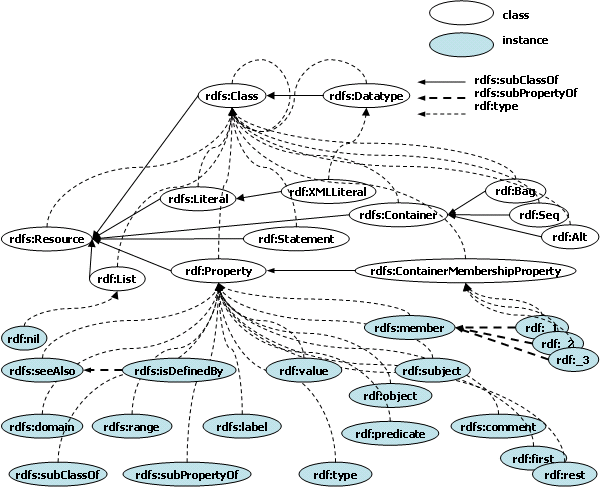

SWCLOS is a software toolkit for lisp programmers who want to process web ontologies in Lisp. The name is an acronym of Semantic Web Common Lisp Object System. As the name implies, SWCLOS is built on top of Common Lisp Object System (CLOS) for Semantic Webs.
In SWCLOS, every word in vocabularies of RDF, RDFS, OWL, and user-defined ontologies, denotes a CLOS object, and the computational semantics are based on RDF(S) and OWL rather than CLOS, whereas it still conforms to object-oriented paradigm.
SWCLOS is an amalgamation of Semantic Web Technology and Object-Oriented Programming (OOP) language. Compared with the other systems for Semantic Webs, SWCLOS has unique features. We may say pros and cons of SWCLOS are ascribed to the features of dynamic OOP language CLOS and the virtue of Lisp. If you believe you are a lisp programmer and you need developing an application for Semantic Technology, SWCLOS is the solution. Furthermore, if you have ever programmed CLOS programs, SWCLOS is the best choice. SWCLOS provides OWL Full level ontology meta-modeling facilities using CLOS meta-programming capability. You can encode CLOS programs for Semantic Webs on top of SWCLOS as you usually do in Lisp, whereas you must understand the difference of semantics between the standard CLOS and RDF(S)/OWL.
This document is userÅfs manual for SWCLOS programmers. Your program in SWCLOS can read ontology files in RDF/XML format, N-Triple format, and lisp S-expression which is specified for SWCLOS. Then, you can handle SWCLOS objects in Lisp, and write down computational results in the various formats mentioned above. Therefore, you can communicate with others in such formats for Semantic Webs.
If you are a CLOS programmer and want to understand what Semantic Technology is, SWCLOS provides you with a good chance to learn and get started Semantic Technology.
SWCLOS is an Open Source Program that was originally developed at GALAXY EXPRESS CORPORATION in Japan, and the author of SWCLOS, has been continued updating it. The latest version is available from author's home page at National Institute of Informatics (NII) http://www-kasm.nii.ac.jp/~koide/SWCLOS2-en.htm.
The SWCLOS current version is developed on Allegro Common Lisp (ACL) 8.1 and 8.2 that is delivered by Franz Inc. for Windows or Mac OS X of Intell. We hope someone ports it to other lisp systems, although it is probably hard, because partly the implementation is concerned with ACL specific features.
GALAXY EXPRESS CORPORATION held all copyrights and allowed anyone to use SWCLOS anyhow AS IS, except modifying the package name of gx and gx-user. ÅeGXÅf was the rocket name from GALAXY EXPRESS CORPORATION. See README file in delivery.
Note that the company GALAXY EXPRESS CORPORATION was undertaken by IHI Corporation at 2010, and the author is still working for IHI. So, he believes this term is inherited by IHI and still effective for the company IHI instead of GALAXY. Note that SWCLOS is a part of successful results of Japanese IT national programs titled ÅgBuilding Operation Support System for Large-Scale Systems using IT.Åh
After compiling and loading SWCLOS into the ACL modern lisp version, it is much better to enter gx-user package in the lisp listener window to use SWCLOS.
| Note that SWCLOS requires case-sensitive-lower on case mode of lisp-reader to distinguish upper and lower case of letters. |
cg-user(1): (in-package gx-user)
#<The gx-user
? package>
gx-user(2):
Franz has prepared a good tutorial for the case of letters. See http://www.franz.com/support/tutorials/casemode-tutorial.htm.
In Semantic Webs you assume that the knowledge always increases and the interpretation become monotonously more precise and richer. SWCLOS leverages the monotonicity principle in Semantic Webs to accept the forward reference in ontology description. In the current version, there are no delete functions for entities in ontologies, and there is no undo functionality (if you input inconsistent data, SWCLOS immediately signal an alarm and open the break window, so you can remedy problems immediately). Such functions will be provided at the next version.
You should use put-value function to put a new value to a slot value place with the above monotonic principle, instead of setf slot-value. Slot-value setting function (setf (slot-value ...) ...) keeps the original CLOS semantics in this version.
Semantic Webs assume that the World Wide Webs are dynamic, changeable, and open in the sense that no one knows all of WWWs. From the viewpoint of logic, Close World Assumption is a basic assumption of inference. Therefore, people who are accustomed to logic thinking should mind this point.
The primary function of Description Logics (DLs) is i) to classify objects to classes, ii) to determine whether or not a class is subsumed by another class. In SWCLOS, this work is performed by i) gx:typep and ii) gx:subtypep in the RDF universe, subsumed-p in the OWL universe. These functions return two values; the first value represents yes/no for query and the second represents the certainty. Therefore, we can deem such return values that the pair of <t,t> expresses boolean true, <nil,t> expresses boolean false, and <nil,nil> means unknown. Note <t,nil> never happens. This ternary-value logic is an extension of ANSI Common Lisp native specification on cl:subtypep, which returns two values described above. See the document of ANSI Common Lisp http://www.franz.com/support/documentation/8.2/ansicl/dictentr/subtypep.htm. However, you do not need to mind how to use ternary value logic. If you use only the first return value, your program does not care of unknown and it is regarded as boolean false. If you are interested how to compute ternary-value logic in SWCLOS, see the source code you obtained.
The Resource Description Framework (RDF) is a language for representing information about resources in the World Wide Webs, and it has a special syntax in XML called RDF/XML for short. In RDF, every resource, except literals and blank nodes, is identified with URI references. This idea originates from the meta-data markup for web resources. However, you do not need to mind in Semantic Webs or ontology descriptions whether resources in RDF really exist on the Webs or not.
In theory, a URI reference in RDF denotes an entity in the universe of discourse, namely a virtual world that reflects ideas on the real world. If a URI reference is a terminology in ontology, the URI reference in SWCLOS is bound with a CLOS object that represents a part of ontology on the denotation of a URI reference. You can input a URI reference object in SWCLOS using angle bracket reader macro ‘<’, where URI reference reading is terminated by ‘>’. In the following demonstration, note that expressions enveloped with ‘<’ and ‘>’ designate URIs, and expressions starting with a sharp character and enveloped with ‘<’ and ‘>’ designate objects in Lisp.
gx-user(3):
<http://www.w3.org/2000/01/rdf-schema#Resource>
#<uri
http://www.w3.org/2000/01/rdf-schema#Resource>
gx-user(4):
(iri-value
<http://www.w3.org/2000/01/rdf-schema#Resource>)
#<rdfs:Class
rdfs:Resource>
The QName is an abbreviation of URI reference with the namespace function for XML. For example, “<http://www.w3.org/2000/01/rdf-schema#Resource>” is abbreviated to “rdfs:Resource”. Here, the fragment-less URI or “http://www.w3.org/2000/01/rdf-schema” is mapped to “rdfs”, which is a prefix of QName, while a fragment “Resource” turns out a local part of QName. Franz Inc. provides URI APIs, in which a URI is implemented of CLOS objects typed to net.uri:uri. In SWCLOS, a part of URI that corresponds to a prefix part of QName is connected to a lisp package, whereby a URI corresponds to a QName as lisp symbol in a package. Thus, a URI reference may have one by one mapping to a lisp symbol (QName), and vice versa, if it has a namespace. See the followings.
gx-user(5):
(uri2symbol
<http://www.w3.org/2000/01/rdf-schema#Resource>)
rdfs:Resource
gx-user(6):
(symbol2uri 'rdfs:Resource)
#<uri
http://www.w3.org/2000/01/rdf-schema#Resource>
At the line 5 in the demonstration above, the URI is converted to the corresponding QName, and at line 6, the reverse operation is directed. Note that such correspondence can be established when SWCLOS loads an ontology including URI references, or when you input URI references as RDF entity in the lisp top level window.
In theory, the substance of RDF can be modeled as labeled uni-directional graph of edge and node called RDF graph. A start node of edge is called subject, an end node is called object, and an edge is called predicate in triple. So, a triple subject/predicate/object in text stands for the minimal structure in graph. A set of triples in text turns out a whole RDF graph.
A predicate in triple is a URI reference or QName, and the statement of predicate requires or produces the corresponding resource called property in RDF vocabulary. Note that any edge must be named by a URI in RDF. Furthermore, it must have a QName in SWCLOS, because it turns a slot name in CLOS. A subject in triple designates a non-literal resource, that is, the node must be expressed by a URI, otherwise it must be a blank node. The blank node has no URI but may be assigned with a blank node ID. An object in triple is either a resource (with or without URI) or a literal. The following shows an example of statement in N-Triple.
<JohnDoe>
<http://www.w3.org/1999/02/22-rdf-syntax-ns#type> <Man> .
In SWCLOS, a resource or an entity in RDF is realized as a CLOS object. A denotation of triple subject/predicate/object is represented by a subjective CLOS object and its slot of which the slot name is corresponding to a predicate. The slot value is an objective CLOS object (called resource) or lisp data (literal).
The subjective CLOS object is bound to the QName lisp symbol, if it is not a blank node.
gx-user(7): rdfs:Resource
#<rdfs:Class
rdfs:Resource>
As well as a subjective CLOS object is bound to the QName, every subjective CLOS object, even if a blank node, is bound to the relevant URI. See the following demonstration.
gx-user(8):
(iri-value
<http://www.w3.org/2000/01/rdf-schema#Resource>)
#<rdfs:Class
rdfs:Resource>
gx-user(9):
<<http://www.w3.org/2000/01/rdf-schema#Resource>>
#<rdfs:Class
rdfs:Resource>
Note that at line 9, the special reader macro for double angle brackets ‘<<’ reads the character sequence of URI up to characters ‘>>’ and then a bound value to the converted URI is returned. A CLOS object that represents a resource in RDF is called resource object in SWCLOS.
SWCLOS utilizes the URI APIs of Allegro Common Lisp (ACL). Please see the details http://www.franz.com/support/documentation/8.2/doc/uri.htm. To implement value-bindable URI, a subclass of net.uri:uri is defined with an extra value slot. This subclass is named IRI. Every IRI in SWCLOS is interned to ensure the uniqueness of IRI in system.
There are several utilities for handling all uri and iri entries. See print-all-entity-uris, do-all-entity-uris, and list-all-entity-uris in doc folder.
A uri and iri in SWCLOS may be converted to the corresponding QName. The prefix of QName in XML is mapped to a lisp package in SWCLOS, and the local part is mapped to a symbol name in the package. A QName symbol is exported, because an exported lisp symbol has the same appearance as the QName in XML. A QName symbol is used to designate a resource name in S-expression. In fact, the description at the top level in SWCLOS requires a QName symbol instead of a URI in the context of define macros such as defConcept and defIndividual. Some URI(IRI)s that have no prefix definition cannot be converted to QNames and remain as URI(IRI).
The mapping rule from URI to QName in SWCLOS is as follows.
See the following demonstration.
gx-user(17):
(uri2symbol
<http://somewhere/maindir/subdir/JohnSmith>)
swsd:JohnSmith
gx-user(18):
(uri2symbol <http://somewhere/JohnSmith>)
sw:JohnSmith
gx-user(19):
(uri2symbol <http://JohnSmith/>)
no:J.S.
At line 17, prefix query to users is carried out for “<http://somewhere/somedirectory/subdir/>”, and “swsd” is replied by a user. At line 18 for “<http://somewhere/>”, “sw” is replied. At line 19, the local name is required at first, then “J.S.” is supplied, then, “no”" is replied for the prefix query.
A URI reference is unique in WWWs, and then XML namespace supports the uniqueness of QName with a local part, which is unique in a name space. In SWCLOS, a local part of QName corresponds to symbol name in a package, and a namespace for a prefix part corresponds to a lisp package. To realize such mapping, we need the connection between a prefix part in URI and a lisp package, and when URI-to-symbol mapping is irregular such as demonstrated above, we further need the mapping from a URI to a symbol name in the lisp package. An instance of uri-namedspace, that is a subclass of net.uri:uri, has two extra slots, package and environment, and it enables such named space environments for the URI name space. See the following demonstration.
gx-user(2): (defpackage
:ex
(:documentation
"http://somewhere/main/sub/file"))
#<The ex package>
gx-user(3):
(set-uri-namedspace-from-pkg (find-package :ex))
#<The ex
package>
gx-user(4): (get-uri-namedspace
<http://somewhere/main/sub/file>)
#<uri-namedspace
http://somewhere/main/sub/file>
gx-user(5): (uri2package
"http://somewhere/main/sub/file")
#<The ex package>
gx-user(6):
(uri2symbol "http://somewhere/main/sub/file#JohnSmith")
ex:JohnSmith
In the above demonstration, a URI string is set to a new package named ÅgexÅh as its documentation option at first, and then the regular mapping is set as prefix named space in system at line 3. So, URI to package mapping is established here as shown later on line 5. In regular mapping for a URI with fragment, regular URI to QName conversion is carried out in default rules without using the URI's symbol mapping environment.
A user may set any user-defined functions to global variable *uri2symbol-name-mapping-fun* and *uri2symbol-package-mapping-fun* in order to implement application-oriented rules for the irregular mapping in default. See the detail in the description of the documentation file of program in the doc folder and the source program.
When SWCLOS reads RDF/XML files, the namespace directions with PrefixedAttName 'xmlns:' and DefaultAttName 'xmlns' make the mapping from a URI to the package name. On the other hand, from the standpoint of lisp expression, SWCLOS users can direct the mapping from a package to a uri in the package documentation as demonstrated above, in which a user put a corresponding URI as documentation of package.
Sometime you may be embarrassed at an error message of no package for a base-URI or a default namespace, when SWCLOS reads an RDF/XML file. It happens if an RDF/XML file does not include any Prefix name in the file for the file itself. In such a case, it is recommended that you supply two sentences, something like “xmlns:base = 'somewhere'” and “xmlns:PREFIX = 'somewhere'” into RDF attributes in the file.
Each uri-namedspace is stored in a hasharray which is bound to a global variable *NameSpaces*. The converting functions, uri2symbol and symbol2uri use these mappings bound to *NameSpaces*.
Note that all resource names or QName symbols are exported. Therefore, in a dedicated package for a resource namespace, the following code is an example that lists up all defined uri in the namespace.
gx-user(7): (loop for x being each external-symbol
in (find-package
:rdfs)
collect (symbol2uri x))
(#<uri
http://www.w3.org/2000/01/rdf-schema#subPropertyOf>
#<uri
http://www.w3.org/2000/01/rdf-schema#Datatype>
#<uri
http://www.w3.org/2000/01/rdf-schema#domain>
#<uri
http://www.w3.org/2000/01/rdf-schema#label>
#<uri
http://www.w3.org/2000/01/rdf-schema#seeAlso>
#<uri
http://www.w3.org/2000/01/rdf-schema#Container>
#<uri
http://www.w3.org/2000/01/rdf-schema#subClassOf>
#<uri
http://www.w3.org/2000/01/rdf-schema#isDefinedBy>
#<uri
http://www.w3.org/2000/01/rdf-schema#Resource>
#<uri
http://www.w3.org/2000/01/rdf-schema#range> ...)
list-all-entities-in performs almost same work.
gx-user(4): (list-all-entities-in :rdfs)
(rdfs:subPropertyOf
rdfs:Datatype rdfs:domain rdfs:label rdfs:seeAlso
rdfs:Container
rdfs:subClassOf rdfs:isDefinedBy
rdfs:Resource rdfs:range ...)
Precisely speaking, we have some semantic gap between a URI namespace and a lisp package. The lisp package is always global in the current session. Namely, a lisp package for the namespace should be unique anywhere and anytime. The URI is also globally unique, but its namespace is a temporal setting for the URI abbreviation in the scope of a RDF/XML file or a Web page. In a RDF/XML file, a settled namespace for a URI is scoped within the file, and it is legal that someone set a different name of namespace for the identical URI in another RDF/XML file. Thus, in ideal the two files should be correctly merged regardless of namespaces but regarding URIs. For example, if you have two ontology files, one has a namespace ‘wine’ for some URI and another has a namespace ‘vin’ for the same URI, the system must read both in the same namespace. However, Lisp cannot read symbols in different packages into some one package. To solve this problem, the lisp package nicknames are utilized here. When SWCLOS detects the mapping different package names onto a same URI, the newly indicated prefix turns out a nickname for the previously mapped package. Even so, note that the first encountered package name is a nominal name and nickname's prefixes do not appear in S-expression.
In addition to the URI-value mapping mentioned above, a CLOS object as resource is also set as symbol-value to the QName symbol, if it has a QName, or to an assigned nodeID symbol, if it has a nodeID. To test whether a CLOS object is a resource object or not, you may use lisp native type predicate cl:typep as follows. Note to use gx:typep predicate, if you need a type-testing predicate that exactly obeys RDFS semantics up to the range of URIs and Literals.
gx-user(2): (cl:typep rdfs:Resource
rdfs:Resource)
t
gx-user(3): (cl:typep rdfs:Class
rdfs:Resource)
t
gx-user(4): (cl:typep rdf:Property
rdfs:Resource)
t
In the example above, three resource objects, named rdfs:Resource, rdfs:Class, and rdf:Property, are tested whether they are instances of class rdfs:Resource.
Predicate rsc-object-p is prepared for testing whether an CLOS object is a resource object or not. It is same as (cl:typep x rdfs:Resource) in the semantics but it is faster a bit and simplifies your code. Note that object? is used for testing a QName symbol or a nodeID symbol to which a resource object is bound.
gx-user(5): (object? 'rdfs:Resource)
t
gx-user(6):
(object? 'rdfs:Class)
t
gx-user(7): (object?
'rdf:Property)
t
To list up all resources defined in the system, you can use list-all-resources as follows.
gx(8): (list-all-resources
t)
(#<rdfs:Class rdfs:Resource> #<rdfs:Class rdfs:Container>
#<rdfs:Class rdf:Alt> #<rdfs:Class rdf:Seq>
#<rdfs:Class rdf:Bag>
#<rdfs:Class
gx::ill-structured-XMLLiteral> #<rdfs:Class rdf:Statement>
#<rdfs:Class rdf:List> #<rdf:List rdf:nil> #<rdfs:Class
rdfs:Literal>
...)
In most cases, a resource object is named with a QName. The method name gets the name from a resource object and returns its QName symbol. The resource object is set to the QName symbol. On the other hand, resource objects that have no name are called anonymous resource, or blank node, or bnode for short, and you can access them through iri-value function rather than symbol value.
gx-user(2): (name
rdfs:Resource)
rdfs:Resource
gx-user(3): (addObject rdfs:Resource
'((rdf:about "NothingElseURI")))
#<rdfs:Resource
:anonymous>
gx-user(4):
<<NothingElseURI>>
#<rdfs:Resource
:anonymous>
gx-user(5): (slot-value <<NothingElseURI>>
'rdf:about)
"NothingElseURI"
gx-user(6): (anonymous-p
<<NothingElseURI>>)
t
Note that in the above demonstration, an anonymous object is created at line 3, whose URI string is "NothingElseURI". So, <NothingElseURI> at line 4 is parsed to a uri, and the resource object is retrieved through iri-value and returned it.
A nodeID is used for referring anonymous node, especially in N-Triple notation. It looks like QName that has ‘_’ as prefix and meaningless local name such as ‘a01’. However, a nodeID is not associated to any URI and has no global identification. There is a package dedicated for nodeID in SWCLOS, its package name is ‘_’, and a nodeID is also a lisp symbol in SWCLOS. You can bind any blank node to a nodeID symbol in the current session, but there is no way to store and reload the information on nodeID bindings by SWCLOS. The following functions are for the nodeID. However, there are useful functions no more on NodeIDs in SWCLOS. Be careful to use NodeIDs with respect to the identity of blank nodes according to RDF Semantics. See RDF Semantics.
As well as character ‘<’ being a reader macro on for URI, character ‘_’ is also a reader macro so that the character sequence of the succeeding colon and other characters makes an exported lisp symbol, and the symbol is handed to eval function if it is bound. Otherwise new anonymous resource object is created and bound to the symbol, then the symbol is handed to eval function. See the following demonstration.
gx-user(2):
_:a01
#<|rdfs:Resource| :anonymous>
gx-user(3): (quote
_:a01)
_:a01
gx-user(4): (list _:a01 _:a02)
(#<|rdfs:Resource|
:anonymous> #<|rdfs:Resource| :anonymous>)
gx-user(5): (eq _:a01
_:a01)
t
gx-user(6): (eq _:a01 _:a02)
nil
Where |rdfs:Resource| denotes the alternative to rdfs:Resource in SWCLOS, which is provided instead of rdfs:Resource when rdfs:Resource is specified as class of instances. It is expected that rdfs:Resource should be an abstract class in CLOS and finally all slots are defined at subclasses of rdfs:Resource, even if some slot definitions might be tentatively designated to rdfs:Resource. |rdfs:Resource| is useful to suppress making wasteful slot definitions at rdfs:Resource.
In RDF graph model, a node is represented by either resource nodes or literals. A resource node is either a named node, which has a globally unique URI, or a blank node, which has no URI. A literal is a kind of string or number, or an instance of XMLLiteral. Figure 4.1, which is taken from RDF/XML Syntax Specification, shows an example of RDF graph. In the figure, a rectangle represents a literal and an ellipse represents an anonymous blank node or a resource node that contains a URI inside. In SWCLOS, Figure 4.1 is expressed as follows in S-expression.
Figure 4.1 RDF Graph Example (from RDF/XML Syntax Specification)
(rdf:Description
(rdf:about "http://www.w3.org/TR/rdf-syntax-grammar")
(ex:editor
(rdf:Description
(ex:homePage
(rdf:Description (rdf:about "http://purl.org/net/dajobe/")))
(ex:fullName "Dave
Beckett")))
(dc:title "RDF/XML Syntax Specification (Revised)"))
Whereas rdf:about in SWCLOS looks like a property in RDF, it is not a property in RDF but an XML attribute that takes a place in RDF/XML format resource definition. The ex:editor, ex:homePage, ex:fullName, and dc:title are RDF properties in QName representation for the corresponding URIs on the edges in the figure. The terminology ‘rdf:Description’ that appears in S-expression for RDF graph representation just denotes a sequence for RDF description. With addForm function, this statement turns out a resource object. See the syntax in BNF described below. Precisely, the assertion above produces three CLOS objects, that is, two named resource objects and one anonymous resource object, in addition to two lisp strings.
SWCLOS allows users to add such a form as mentioned in the previous section, that is, nested object-centered representation of RDF graph into the lisp environment. However, if a resource name is not supplied, the created object is anonymous. See the following example. If you type the lines as the demonstration, a dialogue window will pop up twice at the line 5 for package name of uri “http://purl.org/net/” and “http://www.w3.org/TR/”. Please note to push ‘cancel’ button in this case. If you gave some package name for the query, SWCLOS would create the package and make a symbol, e.g., package-name-you-input:dajobe. Then, you would obtain a different look at line 6, where the symbol name package-name-you-input:dajobe would appear instead of ‘(rdf:Description (rdf:about "http://purl.org/net/dajobe/"))’ for the anonymous object.
gx-user(3): (defpackage
ex)
#<The ex package>
gx-user(4): (defpackage dc)
#<The dc
package>
gx-user(5): (addForm '(rdf:Description
(rdf:about
"http://www.w3.org/TR/rdf-syntax-grammar")
(ex::editor
(rdf:Description
(ex::homePage
(rdf:Description
(rdf:about
"http://purl.org/net/dajobe/")))
(ex::fullName
"Dave Beckett")))
(dc::title "RDF/XML Syntax Specification
(Revised)")))
Warning: Entail by rdf1: ex::editor rdf:type
rdf:Property.
Warning: Entail by rdf1: dc::title rdf:type
rdf:Property.
Warning: Entail by rdf1: ex::homePage rdf:type
rdf:Property.
Warning: Entail by rdf1: ex::fullName rdf:type
rdf:Property.
#<|rdfs:Resource| common-lisp:nil>
gx-user(6): (pprint
(get-form
<<http://www.w3.org/TR/rdf-syntax-grammar>>))
(rdf:Description
(rdf:about
"http://www.w3.org/TR/rdf-syntax-grammar")
(ex:editor
(rdf:Description
(ex:homePage
(rdf:Description (rdf:about
"http://purl.org/net/dajobe/")))
(ex:fullName
"Dave Beckett")))
(dc:title "RDF/XML Syntax Specification
(Revised)"))
Do not care about those warnings at line 5 at this time. It will be explained at Section 5.5. In this example, an RDF graph shown in Figure 4.1 is inputted through a form in S-expression in SWCLOS, and three objects are created in the environment. You can backwardly generate the form in RDF graph from the subjective resource object using get-form in the lisp top level.
The value of property ‘ex:editor’ is anonymous. The value of ‘ex:homePage’ is also anonymous, because SWCLOS did not obtain the name by your cancellation for its package name. Note that SWCLOS cannot identify anonymous objects by name, even if they have the URI in rdf:about attribute. (However, you can get anonymous objects through corresponding URIs with function iri-value.)
Function addForm interprets a form according to the following BNF syntax, where {A--Z} means any character from A to Z, and {SomeNode - element} means the possibility of SomeNode minus element. Also note ‘xyz’ means a sequence of character x, y, and z. #\x means a character x.
form ::= number | string | uri | qname | langedString | datatypeString |
The RDF ontology description language, RDF Schema (RDFS), is a semantic extension of RDF. It provides a device to describe groups of same kind resources (classes) and the inclusiveness among these groups. RDFS provides the minimal set for describing concepts for ontology. The vocabulary contains rdfs:Resource and rdfs:Class, which provide the classification notion together with the property rdf:type, and the subsumption notion of classification with the property rdfs:subClassOf. These semantics of RDFS is similar to the CLOS perspective, namely rdf:type to instance-class relation and rdfs:subClassOf to subclass-superclass relation. Therefore, RDFS classes are mapped onto CLOS classes and RDFS instances are mapped onto CLOS instances in SWCLOS.
Figure 5.1 shows the relationship in RDF(S) vocabulary. A broken curved line stands for rdf:type relation, and a solid straight line stands for rdfs:subClassOf relation. rdfs:Resource is a superclass of all other classes, and rdfs:Class is a class of all classes, including rdfs:Class itself. A class of classes is called metaclass in CLOS. So, rdfs:Class and rdfs:Datatype in RDFS vocabulary are metaclasses in CLOS.

Figure 5.1 RDFS Hierarchy Graph
The notion of metaclass, class, and instance is very important in CLOS. Therefore, predicates for these categories on RDF resources are prepared. See the followings.
gx-user(33): (rsc-object-p
rdfs:Class)
t
gx-user(34): (rsc-object-p
rdfs:Resource)
t
gx-user(35): (rsc-object-p
rdf:Property)
t
gx-user(36): (rsc-object-p
rdfs:comment)
t
gx-user(37): (rsc-object-p "This is a
comment.")
nil
gx-user(38): (rsc-object-p "This is also a
comment."@en)
nil
gx-user(39): (rsc-object-p
"1"^^xsd:nonNegativeInteger)
t
gx-user(40): (rsc-object-p
1)
nil
gx-user(41): (rsc-object-p <Foo>)
nil
gx-user(42):
(rsc-object-p <<Foo>>)
t
gx-user(43): (rdf-class-p
rdfs:Class)
t
gx-user(44): (rdf-class-p
rdfs:Resource)
t
gx-user(45): (rdf-class-p
rdf:Property)
t
gx-user(46): (rdf-class-p
rdfs:comment)
nil
gx-user(47): (rdf-metaclass-p
rdfs:Class)
t
gx-user(48): (rdf-metaclass-p
rdfs:Resource)
nil
gx-user(48): (rdf-instance-p
rdf:Property)
nil
gx-user(49): (rdf-instance-p
rdfs:comment)
t
gx-user(50): (rdf-class-p rdf:List)
t
gx-user(51):
(rdf-instance-p rdf:nil)
t
returns true,
if symbol is a symbol and its value is a meta class of resource.
returns true,
if symbol is a symbol and its value is a class but not a metaclass of
resource.
returns true,
if symbol is a symbol and its value is an instance of resource.
Figure 5.1 depicts class-instance relations described with rdf:type property. Class-subclass relations are described with rdfs:subClassOf property, and property-subproperty relations are described with rdfs:subPropertyOf in RDFS vocabulary.
To get rdf:type property value of resources, you may use gx:type-of and cl:class-of function. Note that gx:type-of is customized type-of function for resources instead of cl:type-of so that it brings RDFS semantics, but cl:class-of is a native function in CLOS. Therefore, while gx:type-of for rdfs:Class returns rdfs:Class in RDFS semantics, cl:class-of for rdfs:Class returns actual metaclass object of rdfs:Class in CLOS as shown below.
gx-user(10): (type-of
1)
xsd:byte
gx-user(11): (type-of
"1"^^xsd:integer)
xsd:integer
gx-user(14): (type-of
rdf:Property)
rdfs:Class
gx-user(15): (class-of
rdf:Property)
#<rdfsClass rdfs:Class>
gx-user(16): (type-of
rdfs:comment)
rdf:Property
gx-user(17): (class-of
rdfs:comment)
#<rdfs:Class rdf:Property>
gx-user(18): (type-of
rdfs:Datatype)
rdfs:Class
gx-user(19): (class-of
rdfs:Datatype)
#<rdfsClass rdfs:Class>
gx-user(20): (type-of
rdfs:Class)
rdfs:Class
gx-user(21): (class-of
rdfs:Class)
#<gx::meta-node rdfsClass>
To get instances of a class, the function collect-direct-instances-of retrieves the direct instances of a class, and the function collect-all-instances-of collects all instances from the class and its subclasses.
gx-user(31): (collect-direct-instances-of rdf:List)
(#<rdf:List rdf:nil>)
gx-user(32): (collect-all-instances-of rdfs:Class)
(#<rdfs:Class |rdfs:Resource|> #<rdfs:Class rdf:Alt>
#<rdfs:Class rdf:Seq> #<rdfs:Class rdf:Bag>
#<rdfs:Class rdfs:ContainerMembershipProperty>
#<rdfs:Class rdfs:Literal> #<rdfs:Class rdfs:Container>
#<rdfs:Class gx::shadow-class> #<rdfs:Class rdf:List>
#<rdfs:Class gx::ill-structured-XMLLiteral> ...)
Note that gx:typep also accepts uris, QName symbols, and literal data in different semantics from cl:typep.
gx-user(7): (typep
<http://somewhere/> rdfs:Resource)
t
t
gx-user(8): (typep "This
is literal." rdfs:Resource)
t
t
gx-user(9): (typep 1
rdfs:Resource)
t
t
gx-user(10): (typep "This is literal."
rdfs:Literal)
t
t
gx-user(11): (typep 1
rdfs:Literal)
t
t
The class-subclass relation in RDFS is defined with rdfs:subClassOf property, and the relation is similar to the CLOS class-subclass relation. However, gx:subtypep is available to test class-subclass relation in RDF semantics. Namely, it accepts uris, QName symbols, and data types in different way from cl:subtypep. See the followings.
gx-user(35): (subtypep rdf:Alt
rdfs:Container)
t
t
gx-user(36): (subtypep rdf:Alt
rdfs:Resource)
t
t
gx-user(37): (subtypep
<http://www.w3.org/1999/02/22-rdf-syntax-ns#Alt>
rdfs:Resource)
t
t
gx-user(38):
(subtypep xsd:integer rdfs:Literal)
t
t
gx-user(39): (subtypep
xsd:integer rdfs:Resource)
t
t
The rdfs:subClassOf value of a resource class is retrieved using slot-value with slot-name rdfs:subClassOf.
gx-user(40):
(slot-value rdf:Alt 'rdfs:subClassOf)
#<rdfs:Class
rdfs:Container>
The properties, which are instances of rdf:Property, have super-property and sub-property notion, although CLOS instances do not have the super-sub relation on slots. Therefore, the super-sub notion upon properties is implemented in SWCLOS. subproperty-p tests the super-sub relation on property. superproperty-of and subproperty-of functions retrieve direct super-properties and sub-properties of a parameter. The detail of property is explained at Section 8.
gx-user(3): (subproperty-p rdfs:isDefinedBy
rdfs:seeAlso)
t
gx-user(4): (subproperty-of
rdfs:seeAlso)
(#<rdf:Property rdfs:isDefinedBy>)
gx-user(5):
(superproperty-of rdfs:isDefinedBy)
(#<rdf:Property
rdfs:seeAlso>)
returns a direct subproperty of property, if exists.
Otherwise, cl:nil is returned.
In RDF, the property is the first-class entity that exists as resource. Therefore, the property resource exists as CLOS object, an instance of the class rdf:Property, in SWCLOS.
An RDF triple, subject/predicate/object is realized by a subjective CLOS object, a slot name, and its slot value in SWCLOS. Therefore, getting an object value in a triple in RDF graph is equal to getting a slot value of the slot name corresponding to the property name.
Note that the line 2 in the following example just demonstrated rdfs:comment resource object as the first-class entity. The line 3 shows the role of property as predicate in triples. The line 4 shows the comment value on rdfs:comment. Please see the difference and discriminate a property as an resource object and a property as predicate or a role of binary relationship.
gx-user(2):
rdfs:comment
#<rdf:Property rdfs:comment>
gx-user(3): (slot-value
rdfs:Resource 'rdfs:comment)
"The class resource,
everything."
gx-user(4): (slot-value rdfs:comment 'rdfs:comment)
"A
description of the subject resource."However, rdf:type has very special semantics. It specifies the type of object, and it is transformed to a class-instance relation in CLOS. Therefore, we get rdf:type value in several ways.
gx-user(2): (slot-value rdfs:comment
'rdf:type)
#<rdfs:Class rdf:Property>
gx-user(3): (class-of
rdfs:comment)
#<rdfs:Class rdf:Property>
gx-user(4): (type-of
rdfs:comment)
rdf:Property
gx-user(5): (-> rdfs:comment
rdf:type)
rdf:Property
The function '->' allows users to traverse over an RDF graph according to a given path and return the value (node name or literal) at the arrival point.
gx-user(6): (-> rdfs:comment rdf:type
rdf:type)
rdfs:Class
gx-user(7): (-> rdfs:comment rdf:type rdf:type
rdfs:comment)
"The class of classes."
gx-user(8): (-> rdfs:comment
rdf:type rdf:type rdfs:comment rdf:type)
xsd:string
In CLOS, a class must be defined before making its instance. A CLOS programmer cannot add a slot value to an instance object without the slot definition upon the class. In contrast, adding a triple, subject/predicate/object, is a basic manner in constructing ontology in RDF. It implies that SWCLOS must add a slot value without the slot definition in the class. Therefore, SWCLOS enabled the piecewise slot addition for objects. Furthermore, the capability for forward referencing is required. Namely, SWCLOS must be able to accept undefined classes and instances as referent. Fortunately we have the principle of monotonicity in Semantic Webs and many entailment rules in RDF, RDFS and OWL. SWCLOS exploited the principle of monotonicity and a number of entailment rules in order to realize the forward referencing for objects. See SWCLOS paper1, paper2, paper3 at ASWC2006, and paper4 at ELW2009 on theoretical details. In this document, we explain the usage of this piecewise adding functionality.
Figure 5.2 illustrates a part of Wine Ontology described in RDFS rather than OWL. You may make this RDF graph in a usual manner of CLOS object definition, namely in order from abstract classes to special classes and from classes to instances. However, SWCLOS allows you to define any object in any order with the premise of monotonicity principle. SWCLOS ensures the final result shown in Figure 5.2, when all pieces of knowledge are inputted.
Figure 5.2 RDF Graph in Wine Ontology
The followings are an example to create the RDF graph shown in Figure 5.2.
gx-user(2): (defpackage vin)
#<The vin
package>
gx-user(3): (defIndividual
vin::ElyseZinfandel
(rdf:type
vin::Zinfandel)
(vin::hasMaker
vin::Elyse))
Warning: Entail by rdf1: vin::hasMaker rdf:type
rdf:Property.
Warning: Range entail by rdf:type: vin::Zinfandel rdf:type
rdfs:Class.
#<vin:Zinfandel vin:ElyseZinfandel>
gx-user(4):
vin:Elyse
#<|rdfs:Resource| vin:Elyse>
gx-user(5): (defIndividual
vin:Elyse (rdf:type vin::Winery))
Warning: Range entail by rdf:type:
vin::Winery rdf:type rdfs:Class.
#<vin:Winery vin:Elyse>
gx-user(6):
(defConcept vin:Zinfandel (rdfs:subClassOf vin::Wine))
Warning: Range
entailX1 by rdfs:subClassOf: vin::Wine rdf:type rdfs:Class.
#<rdfs:Class
vin:Zinfandel>
gx-user(7): (slot-value vin:Zinfandel
'rdfs:subClassOf)
#<rdfs:Class vin:Wine>
gx-user(8): (subtypep
vin:Zinfandel rdfs:Resource)
t
t
At the beginning of the example above, a lisp package named 'vin' was created for Wine Ontology. Then, vin:ElyseZinfandel, whose maker is vin:Elyse, was defined. Note that all of 'vin' vocabulary in Wine Ontology are to be interned in 'vin' package before reading as QName. Otherwise, when you input a new lisp symbol as QName, you must use double colons, because you have no way to make exported symbols directly with neither calling export function nor defining them at the time of the package definition. Since SWCLOS interprets lisp symbols at the position of resources as QName and automatically exports them, then you may specify the QName symbols with one colon afterwards.
The macro defIndividual is used to define an individual or an instance of resource. At line 3, vin:Zinfandel, vin:hasMaker, and vin:Elyse are referred to but not defined as QName yet. So, SWCLOS reasoned out at least that vin:Zinfandel must be an instance of rdfs:Class, vin:hasMaker must be an instance of rdf:Property, and vin:Elyse must be an instance of rdfs:Resource using some of entailment rules in RDF and RDFS. See Section 9. The line 3 in the above example not only made an instance slot for vin:ElyseZinfandel, vin:hasMaker and vin:Elyse, but also automatically defined the CLOS slot definition of vin:hasMaker at the class vin:Zinfandel.
The line 4 to 5 shows the type of vin:Elyse is changed from rdfs:Resource to vin:Winery. Note that vin:Winery is a subclass of rdfs:Resource and shares rdfs:Class as its type with rdfs:Resource. The line 6 to 8 demonstrates that vin:Wine is added into the rdfs:subClassOf slot of vin:Zinfandel. Exactly, the superclass of vin:Zinfandel is refined from rdfs:Resource to vin:Wine, because it is directed, and rdfs:Resource as superclass of vin:Zinfandel is involved by the transitivity of subsumption through vin:Wine. Thus, the automatic redefinition in SWCLOS is possible and knowledge monotonously increases. The forward reference involves the entailment through the various entailment rules, and the statement of explicit assertion refines the results of earlier entailing.
In class-based Object-Oriented Programming Language like CLOS, slot structures in an instance must be defined before making the instance. However, in RDF, a property as predicate and its value can be defined at any RDF graph node (subject) within the domain restriction on the property. Therefore, it is enabled to add any slot (pair of role and filler) to any resource object without the explicit slot definition in the class. SWCLOS automatically adds the new slot definition in the class on the demand of new slot addition to an individual.
There is no special function for users to add new slots into objects in SWCLOS. Instead you can add new slots using defIndividual or defConcept macro, piecewisely. SWCLOS accepts such piecewise and multiple definitions for multiple slots on a resource. After the above example, you can add a new slot (vin:hasColor vin:Red) to vin:ElyseZinfandel as follows.
gx-user(9): (defIndividual
vin:ElyseZinfandel (vin::hasColor vin::Red))
Warning: Entail by rdf1:
vin::hasColor rdf:type rdf:Property.
#<vin:Zinfandel
vin:ElyseZinfandel>
gx-user(10): (get-form
vin:ElyseZinfandel)
(|rdfs:Resource| vin:ElyseZinfandel (rdf:type
vin:Zinfandel)
(vin:hasMaker vin:Elyse) (vin:hasColor
vin:Red))Setting a slot value must show very different
behaviors in SWCLOS. (setf slot-value) is available but it does
not overwrite an old value. However, a new slot
value must be added into slot in the semantics of RDF and the principle of
monotonicity. So, put-value is provided for RDF semantics. It just
adds a new value into the slot value. Precisely, if both an old value and a new
value are not a list and different from each other, the result of adding is a
list of old and new value. If both are a list, the result is a union of both. If
one of them is not a list, it is added (adjoin) to another value as a set
element. This is from the monotonicity principle in Semantic Webs.
gx-user(17): (defIndividual MyResource (myProp "original
one"))
Warning: Entail by rdf1: myProp rdf:type
rdf:Property.
#<|rdfs:Resource| MyResource>
gx-user(18): (slot-value
MyResource 'myProp)
"original one"
gx-user(19): (put-value MyResource
myProp "added 1st")
("added 1st" "original one")
gx-user(20): (put-value
MyResource myProp "added 2nd")
("added 2nd" "added 1st" "original
one")
gx-user(21): (slot-value MyResource 'myProp)
("added 2nd" "added
1st" "original one")
When you add same value that is already stored in the slot, nothing happens.
gx-user(22): (put-value MyResource myProp
"added 1st")
("added 2nd" "added 1st" "original one")
gx-user(23):
(slot-value MyResource 'myProp)
("added 2nd" "added 1st" "original
one")
A CLOS object belongs to only one class. However, an instance in RDF may be a member of multiple classes. In order to solve this problem, we set up an invisible class that is an instance of metaclass gx::shadowed-class. For example, suppose SaucelitoCanyonZinfandel1998 in Wine Ontology is an instance of Zinfandel and Vintage, SWCLOS set a shadowed-class named Zinfandel.0 that has Zinfandel and Vintage as its superclass.
gx-user(2):
(defpackage vin)
#<The vin package>
gx-user(3): (defIndividual
vin::SaucelitoCanyonZinfandel1998
(rdf:type
vin::Zinfandel)
(rdf:type
vin::Vintage))
Warning: Range entail by rdf:type: vin::Zinfandel rdf:type
rdfs:Class.
Warning: Range entailX2 by rdf:type: vin::Vintage rdf:type
rdfs:Class.
Warning: Multiple classing with
(#<rdfs:Class
vin:Zinfandel> #<rdfs:Class vin:Vintage>) for
#<vin:Zinfandel
vin:SaucelitoCanyonZinfandel1998>
#<vin:Zinfandel.0
vin:SaucelitoCanyonZinfandel1998>
gx-user(4): (typep
vin:SaucelitoCanyonZinfandel1998 vin:Zinfandel)
t
t
gx-user(5): (typep
vin:SaucelitoCanyonZinfandel1998 vin:Vintage)
t
t
gx-user(6): (type-of
vin:SaucelitoCanyonZinfandel1998)
(vin:Vintage
vin:Zinfandel)A set of all triples whose predicate is a specific property is called the extension of the property in RDF. A slot in an instance of CLOS is captured as one element of the extension of a property of slot name. In CLOS, we have the slot-definition objects that are allocated for a class metaobject and shared by its instances. A slot definition object in a class holds a slot-name and a type constraint for the slot value. SWCLOS also keeps the subject information on the property extension in the slot-definition objects. Furthermore, every slot definition object for a RDF entity is linked to by a property resource object. Function collect-all-extensions-of collects all elements in the extension of a property and lists up them.
gx-user(53):
rdfs:comment
#<rdf:Property rdfs:comment>
gx-user(54): (find
'rdfs:comment (mop:class-slots
rdfs:Class)
:key
#'name)
#<gx::Property-effective-slot-definition rdfs:comment @
#x20a9520a>
gx-user(55):
(cl:typep
(find
'rdfs:comment (mop:class-slots
rdfs:Class)
:key
#'name)
'mop:slot-definition)
t
gx-user(56):
(collect-all-extensions-of rdfs:comment)
((#<rdfsClass rdfs:Class> "The
class of classes.")
(#<rdfs:Class rdfs:Resource> "The class
resource, everything.")
(#<rdfs:Class rdf:Property> "The class of
RDF properties.")
(#<rdfs:Class rdf:Statement> "The class of RDF
statements.")
(#<rdfs:Class rdfs:Datatype> "The class of RDF
datatypes.")
(#<rdfs:Class rdf:List> "The class of RDF
Lists.")
(#<rdfs:Class rdfs:Container> "The class of RDF
containers.")
(#<rdfs:Class
rdfs:ContainerMembershipProperty>
"The class of container
membership properties, rdf:_1, rdf:_2, ...,
all of which are
sub-properties of 'member'.")
(#<rdfs:Class rdf:Bag> "The class
of unordered containers.")
(#<rdfs:Class rdf:Seq> "The class of
ordered containers.") ...)
The string and number that appear in RDF are called literal. Every literal in RDF is an instance of rdfs:Literal. The class rdf:XMLLiteral is a subclass of rdfs:Literal and a class of all XML Schema data, which includes xsd:string and xsd:decimal and so on. It implies that every XML Schema data is also an instance of rdfs:Literal, and every literal is also an instance of rdfs:Resource, because rdfs:Literal is a subclass of rdfs:Resource.
gx-user(11): (subtypep xsd:string
rdfs:Literal)
t
t
gx-user(12): (typep "this is a string."
rdfs:Literal)
t
t
gx-user(13): (typep "this is an XML string."@en
rdf:XMLLiteral)
t
t
gx-user(14): (typep 1.23
rdfs:Literal)
t
t
gx-user(15): (typep 1.23
xsd:float)
t
t
gx-user(16): (typep 1.23
rdfs:Literal)
t
t
gx-user(17): (typep "1.23"^^xsd:float
xsd:float)
t
t
gx-user(18): (typep "1.23"^^xsd:float
rdfs:Literal)
t
t
gx-user(19): (typep "this is a string."
rdfs:Resource)
t
t
gx-user(20): (typep 1.23
rdfs:Resource)
t
t
Note that gx:typep and gx:subtypep are used in the above demonstration. SWCLOS can accept language-taged string as shown in line number 13, and xsd-typed data notation as shown in line number 17 and 18 through special reader macro rdf::read-string for succeeding character '@' and double characters '^^' after a string, respectively, instead of Common Lisp original reader macro for string. In read-eval-print loop (REPL) of lisp, a lexical token of string is read, the evaluation immediately returns the string object, if it is a plane string, then it is printed by lisp system as string so that the same character sequence as input is printed. As well as plane string, a language-taged string is read in SWCLOS's REPL. Then, the reader macro makes a form that creates an instance of rdf:inLang structure and hands it to the eval function in REPL. So, the lisp system returns an instance of rdf:inLang structure. Similarly, for a string with xsd-type,
gx-user(8): (quote "This is a
test."@en)
(@ "This is a test." "en")
gx-user(9): (eval '"This is a
test."@en)
"This is a test."@en
gx-user(10): "This is a
test."@en
"This is a test."@en
gx-user(11): (quote
"1.23"^^xsd:float)
(^^ "1.23" xsd:float)
gx-user(12): (eval
'"1.23"^^xsd:float)
"1.23"^^xsd:float
gx-user(13):
"1.23"^^xsd:float
"1.23"^^xsd:float
Method value-of allows users to get mapped value in lisp.
gx-user(15): (value-of
"1.23"^^xsd:float)
1.23
In RDF semantics, specific ones out of built-in datatypes in XML Schema are introduced in RDF. In SWCLOS, further limited numbers of datatypes out of datatypes in RDF are defined as lisp datatypes as follows.
| Lisp Type | Definition in Lisp | Ex. in S-expression |
|---|---|---|
| xsd:unsignedByte | (cl:unsigned-byte 8) | 255 |
| xsd:unsignedShort | (cl:unsigned-byte 16) | 65535 |
| xsd:unsignedInt | (cl:unsigned-byte 32) | 4294967295 |
| xsd:unsignedLong | (cl:unsigned-byte 64) | 18446744073709551615 |
| xsd:nonNegativeInteger | cl:unsigned-byte | 0 |
| xsd:byte | (cl:signed-byte 8) | 127 |
| xsd:short | (cl:signed-byte 16) | 32767 |
| xsd:int | (cl:signed-byte 32) | 2147483647 |
| xsd:long | (cl:signed-byte 64) | 9223372036854775807 |
| xsd:integer | cl:integer | 1234567890 |
| xsd:positiveInteger | (cl:integer 1 *) | 1 |
| xsd:nonPositiveInteger | (cl:integer * 0) | 0 |
| xsd:negativeInteger | (cl:integer cl:* -1) | -1 |
| xsd:float | cl:single-float | 1.0 |
| xsd:double | cl:double-float | 1.0d0 |
| xsd:decimal | cl:rational | (rational 1.0) |
| xsd:string | cl:string | "string?" |
| xsd:boolean | (cl:member xsd:true xsd:false) | xsd:false |
| xsd:anyURI | net.uri:uri | (uri "http://somewhere/") |
| xsd:anySimpleType | (or xsd:boolean xsd:anyURI xsd:string xsd:float xsd:double xsd:decimal) | "simple-type?" |
Therefore, you may check a lisp datum in S-expression against the xsd types defined as lisp type as follows.
gx-user(7): (cl:typep 1
'xsd:positiveInteger)
t
gx-user(8): (cl:typep 1
'xsd:nonNegativeInteger)
t
gx-user(9): (cl:typep 1
'xsd:integer)
t
gx-user(10): (cl:typep 1 'xsd:int)
t
gx-user(11):
(cl:typep 1 'xsd:decimal)
t
gx-user(12): (cl:typep 1
'xsd:unsignedByte)
t
gx-user(13): (cl:typep 1
'xsd:anySimpleType)
t
Moreover, each xsd type in lisp has an RDF datatype object as symbol value of the datatype, and gx:typep interprets a datum in lisp not only as lisp datatype but also as RDF datatype, if it is a plane literal (non-typed-literal) or a lisp datum.
gx-user(14):
xsd:positiveInteger
#<rdfs:Datatype
xsd:positiveInteger>
gx-user(15): xsd:integer
#<rdfs:Datatype
xsd:integer>
gx-user(16): (typep 1
xsd:positiveInteger)
t
t
gx-user(17): (typep 1
xsd:nonNegativeInteger)
t
t
gx-user(18): (typep 1
xsd:integer)
t
t
gx-user(19): (typep 1
xsd:int)
t
t
gx-user(20): (typep 1
xsd:decimal)
t
t
gx-user(21): (typep 1
xsd:unsignedByte)
t
t
gx-user(22): (typep 1
xsd:anySimpleType)
t
On the other hand, a typed literal in RDF is mapped to an instance of RDF data type class in SWCLOS, and each typed-data instance is also interpreted by gx:typep as follows.
gx-user(8): (typep "1"^^xsd:integer
xsd:integer)
t
t
gx-user(9): (typep "1"^^xsd:integer
xsd:positiveInteger)
nil
t
gx-user(10): (typep
"1"^^xsd:positiveInteger xsd:integer)
t
t
gx-user(11): (typep
"1"^^xsd:positiveInteger xsd:positiveInteger)
t
t
Note that xsd:integer subsumes xsd:positiveInteger, so that "1"^^positiveInteger is an instance of xsd:positiveInteger and xsd:integer, too, but "1"^^integer is not an instance of xsd:positiveInteger, although the values of both in the value space are equal.
Every datatype is an instance of rdfs:Datatype. Note that rdf:XMLLiteral and xsd:integer, etc. are a class. So, rdfs:Datatype is a metaclass.
gx-user(21): (typep xsd:integer
rdfs:Datatype)
t
t
gx-user(22): (typep rdf:XMLLiteral
rdfs:Datatype)
t
t
gx-user(23): (strict-class-p
xsd:integer)
t
gx-user(24): (rdf-metaclass-p
rdfs:Datatype)
t
Function datatype? checks whether it is an XSD datatype or not for a symbol parameter, and datatype-p checks for a datatype object (an instance of rdfs:Datatype).
gx-user(31): (datatype?
'xsd:integer)
t
gx-user(32): (datatype-p
xsd:integer)
t
The xml:lang attribute in RDF syntax can be used on any node element or property element in RDF/XML syntax to indicate that the included content is in the given language. See the following example, which is taken from W3C RDF/XML Syntax Specification (Revised).
<?xml version="1.0"
encoding="utf-8"?>
<rdf:RDF
xmlns:rdf="http://www.w3.org/1999/02/22-rdf-syntax-ns#"
xmlns:dc="http://purl.org/dc/elements/1.1/">
<rdf:Description
rdf:about="http://www.w3.org/TR/rdf-syntax-grammar">
<dc:title>RDF/XML
Syntax Specification
(Revised)</dc:title>
<dc:title
xml:lang="en">RDF/XML Syntax Specification
(Revised)</dc:title>
<dc:title
xml:lang="en-US">RDF/XML Syntax Specification
(Revised)</dc:title>
</rdf:Description>
<rdf:Description
rdf:about="http://example.org/buecher/baum"
xml:lang="de">
<dc:title>Der
Baum</dc:title>
<dc:description>Das Buch ist
außergewöhnlich</dc:description>
<dc:title
xml:lang="en">The
Tree</dc:title>
</rdf:Description>
</rdf:RDF>
In reading RDF/XML forms, the xml:lang attribute on node elements is parsed as it is an attribute. The xml:lang attribute on property element is transformed as if it envelopes the role value as sub-role. Therefore, the above RDF/XML forms are interpreted and transformed to the following S-expressions.
(rdf:Description (rdf:about <uri
http://www.w3.org/TR/rdf-syntax-grammar>)
(dc:title
"RDF/XML Syntax Specification
(Revised)")
(dc:title
(:en "RDF/XML Syntax Specification
(Revised)"))
(dc:title
(:en-us "RDF/XML Syntax Specification (Revised)")))
(rdf:Description
(rdf:about <uri
http://example.org/buecher/baum>)
(xml:lang
:de)
(dc:title
"Der
Baum")
(dc:description
"Das Buch ist
außergewöhnlich")
(dc:title
(:en "The Tree")))
SWCLOS keeps and maintains the language environment according to the order and the nest structure of RDF/XML language designation. Therefore, at the second rdf:Description form in the above example, the German environment is set up at the language tag ':de' at first, then the English environment is established in the German environment at the ':en' envelope. As a result, We obtain the followings.
gx-user(9): (read-rdf-file #'addRdfXml
"example08.rdf")
Warning: Entail by rdf1: dc:title rdf:type
rdf:Property.
Warning: Entail by rdf1: dc:description rdf:type
rdf:Property.
:done
gx-user(10): (slot-value
<<http://www.w3.org/TR/rdf-syntax-grammar>> 'dc:title)
("RDF/XML
Syntax Specification (Revised)"
"RDF/XML Syntax Specification
(Revised)"@en
"RDF/XML Syntax Specification (Revised)"@en-US)
gx-user(11):
(slot-value <<http://example.org/buecher/baum>> 'dc:title)
("Der
Baum"@de "The Tree"@en)
gx-user(12): (slot-value
<<http://example.org/buecher/baum>> 'dc:description)
"Das Buch
ist außergewöhnlich"@de
Where such an expression as "Der Baum"@de and
"The Tree"@en is an instance of rdf:inLang structure,
which is printed as it looks like a lexcal form of plain literal with language
option. See ISO 639-1 alpha-2
language code about the optional lang code.
To represent collections of resources, RDF provides three ways as subclass of rdfs:Container.
The first member of container is the value of the property rdf:_1, the second member is the value of the property rdf:_2, and so on. This kind of property, rdf:_nnn, is called an ordinal property.
Figure 7.1 is an example of a collection of rdf:Bag, which is taken from Jena tutorial.
Figure 7.1 An Example of rdfs:Bag (from Jena Tutorial)
Then, the followings encode Figure 7.1.
gx-user(3): (defpackage somewhere)
#<The somewhere
package>
gx-user(4): (defpackage vCard)
#<The vCard
package>
gx-user(5): (defIndividual
somewhere::JohnSmith
(rdf:about
"http://somewhere/JohnSmith")
(vCard::FN
"John
Smith")
(vCard::N
(rdfs:Resource (vCard::Given
"John")
(vCard::Family
"Smith"))))
Warning: Entail by rdf1: vCard::FN rdf:type
rdf:Property.
Warning: Entail by rdf1: vCard::N rdf:type
rdf:Property.
Warning: Entail by rdf1: vCard::Given rdf:type
rdf:Property.
Warning: Entail by rdf1: vCard::Family rdf:type
rdf:Property.
#<|rdfs:Resource| somewhere:JohnSmith>
gx-user(6):
(defIndividual
somewhere::BeckySmith
(rdf:about
"http://somewhere/BeckySmith")
(vCard:FN
"Becky
Smith")
(vCard:N
(rdfs:Resource (vCard:Given
"Becky")
(vCard:Family
"Smith"))))
#<|rdfs:Resource| somewhere:BeckySmith>
gx-user(7):
(defIndividual _:bag01 (rdf:type
rdf:Bag)
(rdf::_1
somewhere:BeckySmith)
(rdf::_2
somewhere:JohnSmith))
Warning: Entail by rdf1: rdf:_1 rdf:type
rdf:Property.
Warning: Entail by rdf1: rdf:_2 rdf:type
rdf:Property.
#<rdf:Bag :anonymous>
gx-user(8): (get-form
_:bag01)
(rdf:Bag (rdf:type rdf:Bag)
(rdf:_1
somewhere:BeckySmith) (rdf:_2 somewhere:JohnSmith))
In SWCLOS, ordinal properties are initially not defined. However, if you put them in proper position, it is automatically defined as an instance of rdfs:ContainerMembershipProperty.
In Figure 7.1, the top node is a blank node, then we put it a blank node identifier _:bag01. Note that a blank node object is bound to a designated blank node ID. In SWCLOS, a node name is not mandatory even if in the top level node, but it is preferable to put a node identifier for convenience.
In RDF semantics, we can make an instance of rdf:List with rdf:first, rdf:rest and rdf:nil. Figure 7.2 shows an example of list structure in RDF, which is from RDF Primer.

Figure 7.2 An RDF Collection (list structure) (from RDF Primer)
This RDF graph is encoded as follows straightforwardly.
gx-user(2): (defpackage eg (:documentation
"http://example.org/"))
#<The eg package>
gx-user(3): (defpackage
vocab
(:documentation
"http://example.org/students/vocab/"))
#<The vocab
package>
gx-user(4): (defIndividual
eg::courses/6.001
(rdf:about
"http://example.org/courses/6.001")
(vocab::students
(rdf:List
(rdf:first
(rdfs:Resource
(rdf:about
"http://example.org/students/Amy")))
(rdf:rest
(rdf:List
(rdf:first
(rdfs:Resource
(rdf:about
"http://example.org/students/Mohamed")))
(rdf:rest
(rdf:List
(rdf:first
(rdfs:Resource
(rdf:about
"http://example.org/students/Johann")))
(rdf:rest
rdf:nil))))))))
Warning: Entail by rdf1: vocab::students rdf:type
rdf:Property.
#<|rdfs:Resource| eg:courses/6.001>
gx-user(5):
(pprint (get-form eg:courses/6.001))
(|rdfs:Resource|
eg:courses/6.001
(rdf:about
<http://example.org/courses/6.001>)
(vocab:students
(rdf:List
(rdf:first
(rdfs:Resource
(rdf:about
<http://example.org/students/Amy>)))
(rdf:rest
(rdf:List
(rdf:first
(rdfs:Resource
(rdf:about
<http://example.org/students/Mohamed>)))
(rdf:rest
(rdf:List
(rdf:first
(rdfs:Resource
(rdf:about
<http://example.org/students/Johann>)))
(rdf:rest
rdf:nil))))))))
You can get any data in list using path traverse function '->' as follows.
gx-user(6): (get-form (->
eg:courses/6.001 vocab:students rdf:rest
rdf:rest
rdf:first))
(rdfs:Resource (rdf:about
<http://example.org/students/Johann>))
gx-user(7): (->
eg:courses/6.001 vocab:students rdf:rest rdf:rest rdf:rest)
#<rdf:List
rdf:nil>
However, using rdf:List is very tedious in SWCLOS. We can use the lisp list to represent a collection of resources in SWCLOS. You may represent the collection of students as follows, whereas the RDF graph is not equal to Figure 7.2.
gx-user(7): (defIndividual
eg::courses/6.002
(rdf:about
"http://example.org/courses/6.002")
(vocab::students
(rdfs:Resource
(rdf:about
"http://example.org/students/Amy"))
(rdfs:Resource
(rdf:about
"http://example.org/students/Mohamed"))
(rdfs:Resource
(rdf:about
"http://example.org/students/Johann"))))
#<|rdfs:Resource|
eg:courses/6.002>
gx-user(8): (get-form
eg:courses/6.002)
(|rdfs:Resource| eg:courses/6.002
(rdf:about
<http://example.org/courses/6.002>)
(vocab:students
(rdfs:Resource
(rdf:about
<http://example.org/students/Amy>))
(rdfs:Resource
(rdf:about
<http://example.org/students/Mohamed>))
(rdfs:Resource
(rdf:about <http://example.org/students/Johann>))))
gx-user(9): (->
eg:courses/6.002 vocab:students)
(#<rdfs:Resource :anonymous>
#<rdfs:Resource :anonymous> #<rdfs:Resource
:anonymous>)
gx-user(10): (mapcar #'get-form *)
((rdfs:Resource
(rdf:about <http://example.org/students/Amy>))
(rdfs:Resource
(rdf:about <http://example.org/students/Mohamed>))
(rdfs:Resource
(rdf:about <http://example.org/students/Johann>)))
Even though this input form does not contain rdf:first and rdf:rest, it is very easy for lisp programmers to imagine the above forms from the list structure in Figure 7.2.
Each property in RDF may have its own attributes about the domain and the range. The domain value restricts the class of subject in triple of the extension of the property and the range value restricts the range of the property value. See Figure 5.2.
To define a domain and a range of a property, use defProperty as follows.
gx-user(3): (defpackage vin)
#<The
vin package>
gx-user(4): (defProperty
vin::hasMaker
(rdfs:domain
vin::Wine)
(rdfs:range
vin::Winery))
Warning: Range entailX3 by rdfs:domain: vin::Wine rdf:type
rdfs:Class.
Warning: Range entailX3 by rdfs:range: vin::Winery rdf:type
rdfs:Class.
#<rdf:Property vin:hasMaker>
The defined domain and range value of property is retrieved by the accessor rdfs:domain and rdfs:range.
gx-user(6): (rdfs:domain
vin:hasMaker)
#<rdfs:Class vin:Wine>
gx-user(7): (rdfs:range
vin:hasMaker)
#<rdfs:Class vin:Winery>
gx-user(8): (rdfs:domain
rdfs:comment)
#<rdfs:Class rdfs:Resource>
gx-user(9): (rdfs:range
rdfs:comment)
#<rdfs:Class rdfs:Literal>
These accessor signals an error, if a property has no definition.
gx-user(10): (defProperty
vin::hasColor
(rdfs:range
vin::WineColor))
Warning: Range entailX3 by rdfs:range: vin::WineColor
rdf:type rdfs:Class.
#<rdf:Property vin:hasColor>
gx-user(11):
(rdfs:range vin:hasColor)
#<rdfs:Class vin:WineColor>
gx-user(12):
(rdfs:domain vin:hasColor)
Error: The slot rdfs:domain is unbound in the
object
#<rdf:Property vin:hasColor> of class #<rdfs:Class
rdf:Property>.
[condition type: unbound-slot]
You may use function range-value and domain-value without signaling an error, even if a property has no definition on domain or range value.
gx-user(13): (range-value
vin:hasColor)
#<rdfs:Class vin:WineColor>
gx-user(14):
(domain-value vin:hasColor)
nil
The domain and range value is inherited from the super-properties defined through rdfs:subPropertyOf. In the following example, function get-domain accesses and retrieves the domain value of superproperties of vin:hasColor.
gx-user(19): (defProperty
vin::hasColor
(rdfs:subPropertyOf
vin::hasWineDescriptor))
Warning: Range entailX3 by rdfs:subPropertyOf:
vin::hasWineDescriptor rdf:type rdf:Property.
#<rdf:Property
vin:hasColor>
gx-user(20): (get-domain
vin:hasColor)
nil
gx-user(21): (defProperty
vin:hasWineDescriptor
(rdfs:domain
vin:Wine))
#<rdf:Property vin:hasWineDescriptor>
gx-user(22):
(get-domain vin:hasColor)
#<rdfs:Class vin:Wine>
As mentioned in the description of get-domain and get-range above, any disjoint pair of domains and ranges with respect to a specific property causes the unsatisfiable condition error. The satisfiability checking is very important especially in OWL, because OWL provides users the definition of owl:disjointWith relation on concepts (classes), while RDF provides only the intrinsic disjoitness with respect to XML Schema data.
In the following demonstration, range-condition-unsatiafiable error happens, since xsd:float and xsd:integer are disjoint and both are defined as domains with respect to hasInteger property.
gx-user(2): (defProperty hasFloat (rdfs:range
xsd:float))
#<rdf:Property hasFloat>
gx-user(3): (defProperty
hasInteger (rdfs:range
xsd:integer)
(rdfs:subPropertyOf
hasFloat))
#<rdf:Property hasInteger>
gx-user(4): (defResource foo
(hasInteger 1))
Error: range condition unsatisfiable: disjoint clash:
#<rdfs:Datatype xsd:integer>
#<rdfs:Datatype xsd:float>
[condition type:
range-condition-unsatisfiable]
If domains and ranges involve some inclusiveness (gx:subtypep relation in RDF and subsumed-p relation in OWL) among them, the most specific concepts (classes) or MSCs are returned. Namely, the return value of get-domain and get-range is the most specific concept (if all concepts are related in the super-sub relation) or a list of the most specific concepts (if some concepts are independent in the super-sub relation).
After rebooting SWCLOS,
gx-user(2): (defProperty
hasInteger (rdfs:range xsd:integer))
#<rdf:Property
hasInteger>
gx-user(3): (defProperty
hasPositiveInteger
(rdfs:range
xsd:positiveInteger)
(rdfs:subPropertyOf
hasInteger))
#<rdf:Property hasPositiveInteger>
gx-user(4):
(get-range hasPositiveInteger)
#<rdfs:Datatype
xsd:positiveInteger>
gx-user(5): (subtypep xsd:positiveInteger
xsd:integer)
t
t
In this case, xsd:positiveInteger is chosen as range constraint of property subproperty hasPositiveInteger in two constraints, xsd:integer and xsd:positiveInteger, because xsd:positiveInteger is more specific than xsd:integer.
In SWCLOS, all RDF and RDFS axioms are implemented. For exmaple, the following example shows RDF axiomatic triples.
gx-user(2): (typep rdf:type
rdf:Property)
t
t
gx-user(3): (typep rdf:subject
rdf:Property)
t
t
gx-user(4): (typep rdf:predicate
rdf:Property)
t
t
gx-user(5): (typep rdf:object
rdf:Property)
t
t
gx-user(6): (typep rdf:first
rdf:Property)
t
t
gx-user(7): (typep rdf:rest
rdf:Property)
t
t
gx-user(8): (typep rdf:value
rdf:Property)
t
t
gx-user(9): (typep rdf:nil
rdf:List)
t
t
The following example shows a part of RDFS axiomatic triples.
gx-user(14): (rdfs:domain
rdf:type)
#<rdfs:Class rdfs:Resource>
gx-user(15): (rdfs:domain
rdfs:domain)
#<rdfs:Class rdf:Property>
gx-user(16): (rdfs:domain
rdfs:range)
#<rdfs:Class rdf:Property>
gx-user(17): (rdfs:domain
rdfs:subPropertyOf)
#<rdfs:Class rdf:Property>
gx-user(18):
(rdfs:domain rdfs:subClassOf)
#<RDFSclass rdfs:Class>
gx-user(19):
(rdfs:domain rdf:subject)
#<rdfs:Class
rdf:Statement>
gx-user(24): (rdfs:range rdf:type)
#<rdfsClass
rdfs:Class>
gx-user(25): (rdfs:range rdfs:domain)
#<rdfsClass
rdfs:Class>
gx-user(26): (rdfs:range rdfs:range)
#<rdfsClass
rdfs:Class>
gx-user(27): (rdfs:range
rdfs:subPropertyOf)
#<rdfs:Class rdf:Property>
gx-user(28):
(rdfs:range rdfs:subClassOf)
#<rdfsClass
rdfs:Class>
gx-user(31): (rdfs:subClassOf
rdf:Alt)
#<rdfs:Class rdfs:Container>
gx-user(32):
(rdfs:subClassOf rdf:Bag)
#<rdfs:Class
rdfs:Container>
gx-user(33): (rdfs:subClassOf
rdf:Seq)
#<rdfs:Class rdfs:Container>
gx-user(34):
(rdfs:subClassOf rdfs:ContainerMembershipProperty)
#<rdfs:Class
rdf:Property>
gx-user(35): (rdfs:subPropertyOf
rdfs:isDefinedBy)
(#<rdf:Property rdfs:seeAlso>)
gx-user(36):
(typep rdf:XMLLiteral rdfs:Datatype)
t
t
gx-user(37):
(rdfs:subClassOf rdf:XMLLiteral)
#<rdfs:Class
rdfs:Literal>
gx-user(38): (rdfs:subClassOf
rdfs:Datatype)
#<rdfsClass rdfs:Class>
The followings also show important axiomatic triples on RDFS.
gx-user(39): (typep rdfs:Resource
rdfs:Class)
t
t
gx-user(40): (typep rdfs:Class
rdfs:Resource)
t
t
gx-user(41): (typep rdfs:Resource
rdfs:Resource)
t
t
gx-user(42): (typep rdfs:Class
rdfs:Class)
t
t
gx-user(43): (typep rdf:XMLLiteral
rdfs:Class)
t
t
gx-user(44): (typep rdfs:Datatype
rdfs:Class)
t
t
The class-instance relation in RDF is directly defined with rdf:type property. The notion of RDF class is different from the class notion in CLOS, but the subsumption relation among objects is the same as that in CLOS. The straightforward mapping of rdf:type relation to CLOS class instance relation conveys gains and benefits such as the potential of CLOS is available. However, this straightforward mapping causes only one obstacle to implement RDF on top of CLOS, namely rdfs:Class that is an instance of rdfs:Class itself. Allegro Common Lisp rejects such membership loop among classes, whereas cl:standard-object is an instance of itself in CLOS. Therefore, to work around this obstacle, the internal proxy class, rdfsClass, is introduced as a class of rdfs:Class and simultaneously as a subclass of rdfs:Class. Note that this twisted relation of class/instance and superclass/subclass between rdfs:Class and rdfsClass in CLOS produces a membership loop of rdfs:Class as well as the relation between rdfs:Resource and rdfs:Class in CLOS. See the followings.
gx-user(2): (cl:typep rdfs:Resource
rdfs:Class)
t
gx-user(3): (cl:subtypep rdfs:Class
rdfs:Resource)
t
t
gx-user(4): (cl:typep rdfs:Resource
rdfs:Resource)
t
gx-user(5): (cl:typep rdfs:Class
'rdfsClass)
t
gx-user(6): (cl:subtypep 'rdfsClass
rdfs:Class)
t
t
gx-user(7): (cl:typep rdfs:Class
rdfs:Class)
t
Note that the membership loop on rdfs:Class is really implemented in CLOS semantics by means of a trick called twisted relation between rdfs:Class and its direct class rdfsClass.
The RDFS entailment directs that every resource in RDF is typed to rdfs:Resource. The following shows some examples.
gx-user(13): (typep rdfs:Resource
rdfs:Resource)
t
t
gx-user(14): (typep rdfs:Class
rdfs:Resource)
t
t
gx-user(15): (typep rdf:nil
rdfs:Resource)
t
t
gx-user(16): (typep rdfs:comment
rdfs:Resource)
t
t
gx-user(17): (typep "This is a plain literal."
rdfs:Resource)
t
t
gx-user(18): (typep 1
rdfs:Resource)
t
t
gx-user(19): (typep <http://www.somewhere>
rdfs:Resource)
t
t
There are two RDF entailment rules, rdf1 and rdf2 as follows.
gx-user(9): (defIndividual uuu (aaa
yyy))
Warning: Entail by rdfs1: aaa rdf:type
rdf:Property.
#<|rdfs:Resource| uuu>
gx-user(10): (typep aaa
rdf:Property)
t
t
gx-user(11): (defIndividual vvv (aaa (xsd:integer
1)))
#<|rdfs:Resource| vvv>
gx-user(12): (get-form
vvv)
(|rdfs:Resource| vvv (aaa "1"^^xsd:integer))
gx-user(13): (typep
(slot-value vvv 'aaa) rdf:XMLLiteral)
t
t
In any input triple, a predicate is an instance of rdf:Property (entailment rule rdf1). When an object of an input triple is a well-typed XML literal, SWCLOS creates an data object that is an instance of rdf:XMLLiteral typed to the designated type (entailment rule rdf2).
There are 13 rules in RDFS as shown in RDFS Entailment Rules in RDF Semantics.
However a lisp string and number is interpreted as a plain literal in RDFS by SWCLOS. Therefore, rdfs1 rule is implicitly realized for a plain literal.
Note that hereafter if line numbers are renewed some younger number, it means the system is newly booted and refleshed.
gx-user(2): (typep "This is a string in
lisp." rdfs:Literal)
t
t
gx-user(3): (typep 1
rdfs:Literal)
t
t
For a plain literal with language tag, SWCLOS creates an instance object of rdf:inLang, then the result for a literal with language tag also satisfies rdfs1 rule.
Note that the system is rebooted, before each of the following examples, otherwise uuu or aaa in the example are collides.
gx-user(4): (defIndividual uuu (aaa (:en "This is an English
text.")))
Warning: Entail by rdf1: aaa rdf:type
rdf:Property.
#<|rdfs:Resource| uuu>
gx-user(5): (get-form
uuu)
(|rdfs:Resource| uuu (aaa (:en "This is an English
text.")))
gx-user(6): (slot-value uuu 'aaa)
"This is an English
text."@en
gx-user(7): (typep (slot-value uuu 'aaa)
rdfs:Literal)
t
t
Rdfs2 is a domain entailment as follows. SWCLOS proactively performs this entailment rule. In other words, SWCLOS newly creates an instance or refines the existing instance according to this rule.
gx-user(2): (defProperty aaa (rdfs:domain xxx))
Warning: Range
entailX3 by rdfs:domain: xxx rdf:type rdfs:Class.
#<rdf:Property
aaa>
gx-user(3): (defIndividual uuu (aaa yyy))
#<xxx
uuu>
gx-user(4): (typep uuu xxx)
t
t
Rdfs3 is a range entailment same as domain rule rdfs2.
gx-user(2): (defProperty aaa
(rdfs:range xxx))
Warning: Range entailX3 by rdfs:range: xxx rdf:type
rdfs:Class.
#<rdf:Property aaa>
gx-user(3): (defIndividual uuu (aaa
vvv))
Warning: Range entailX3 by aaa: vvv rdf:type
xxx.
#<|rdfs:Resource| uuu>
gx-user(4): (typep vvv
xxx)
t
t
Rdfs4a rule entails a subject in any triple is an instance of rdfs:Resource. In a description of form for addForm input parameter, individual's type is designated by a classspecifier in the form. If 'rdf:Description' is indicated for class description, or cl:nil is passed for the resource object creation as no type indication, rdfs4a rule may be applicable. However, there is a sensitive question in SWCLOS. In RDF(S) semantics, rdfs:Resource is a type of every resource, despite that a resource is an instance of rdfs:Class or an instance of rdfs:Resource. On the other hand, in CLOS level at SWCLOS implementation, we have two possibilities for the instance of rdfs:Resource. It may be either as an instance of rdfs:Resource CLOS class (namely instance), or as an instance of rdfs:Class metaclass (namely class). As a default in SWCLOS, an instance of rdfs:Resource as CLOS instance of rdfs:Resource is created. Thus, SWCLOS changes the category of created object from instance to class later on, if a metaclass is indicated for the object at the proper definition.
Rdfs4b has the same logic and the same problem as rdfs4a for the range entailment. See the following example.
gx-user(2): (addForm '(cl:nil (:name uuu) (aaa xxx)))
Warning:
Entail by rdf1: aaa rdf:type rdf:Property.
#<|rdfs:Resource|
uuu>
gx-user(3): (typep uuu rdfs:Resource)
t
t
gx-user(4): (typep
xxx rdfs:Resource)
t
t
Rdfs5 is a transitivity rule on rdfs:subPropertyOf. We implemented it on properties.
gx-user(2): (defProperty uuu
(rdfs:subPropertyOf vvv))
Warning: Range entailX3 by rdfs:subPropertyOf: vvv
rdf:type rdf:Property.
#<rdf:Property uuu>
gx-user(3): (defProperty
vvv (rdfs:subPropertyOf xxx))
Warning: Range entailX3 by rdfs:subPropertyOf:
xxx rdf:type rdf:Property.
#<rdf:Property vvv>
gx-user(4):
(subproperty-p uuu xxx)
t
Rdfs6 is very natural rule on rdfs:subPropertyOf as well as rdfs10 on rdfs:subClassOf.
gx-user(9): (subproperty-p uuu
uuu)
t
Rdfs7 may be a little bit confusing.
gx-user(2): (defProperty aaa (rdfs:subPropertyOf
bbb))
Warning: Range entailX3 by rdfs:subPropertyOf: bbb rdf:type
rdf:Property.
#<rdf:Property aaa>
gx-user(3): (defIndividual uuu
(aaa yyy))
#<|rdfs:Resource| uuu>
gx-user(4): (slot-value uuu
'bbb)
Error: The slot bbb is missing from the object #<|rdfs:Resource|
uuu>
of class #<rdfs:Class |rdfs:Resource|> during
operation slot-value.
[condition type: program-error]
gx-user(5): (->
uuu bbb)
#<|rdfs:Resource| yyy>
In the form, (slot-value uuu 'bbb), although getting a slot value of bbb that is attached to uuu object was attempted, the value yyy is attached by slot named aaa, then CLOS signaled an slot missing alarm. The function “->” is for RDF graph traversing and getting the value at the final place arrived. It takes account of not only designated properties as travel path but also their super-properties.
Rdfs8 means that the default superclass of instance of rdfs:CLass metaclass is rdfs:Resource.
gx-user(2): (defResource uuu (rdf:type
rdfs:Class))
#<rdfs:Class uuu>
gx-user(3): (subtypep uuu
rdfs:Resource)
t
t
Rdfs9 subsumption rule and rdfs10 are natively equipped with in CLOS.
gx-user(2): (defResource uuu (rdfs:subClassOf
xxx))
Warning: Range entailX1 by rdfs:subClassOf: xxx rdf:type
rdfs:Class.
#<rdfs:Class uuu>
gx-user(3): (defIndividual vvv
(rdf:type uuu))
#<uuu vvv>
gx-user(4): (typep vvv
xxx)
t
t
gx-user(5): (cl:typep vvv xxx)
t
gx-user(6): (subtypep
uuu uuu)
t
t
gx-user(7): (cl:subtypep uuu
uuu)
t
t
Rdfs11 transitivity rule of rdfs:subClassOf is also natively equipped with in CLOS.
gx-user(2): (defResource uuu
(rdfs:subClassOf vvv))
Warning: Range entailX1 by rdfs:subClassOf: vvv
rdf:type rdfs:Class.
#<rdfs:Class uuu>
gx-user(3): (defResource vvv
(rdfs:subClassOf xxx))
Warning: Range entailX1 by rdfs:subClassOf: xxx
rdf:type rdfs:Class.
#<rdfs:Class vvv>
gx-user(4): (subtypep uuu
xxx)
t
t
gx-user(5): (cl:subtypep uuu xxx)
t
t
Rdfs12 is a special rule for rdfs:ContainerMembershipProperty. SWCLOS proactively adds the entailment that an instance of rdfs:ContainerMembershipProperty is a subproperty of rdfs:member.
gx-user(2): (defIndividual uuu (rdf:type
rdfs:ContainerMembershipProperty))
#<rdfs:ContainerMembershipProperty
uuu>
gx-user(3): (subproperty-p uuu rdfs:member)
t
The last rule rdfs13 is for data type definition.
gx-user(2): (defResource uuu (rdf:type
rdfs:Datatype))
Warning: Datatype uuu is defined. Please define lisp type
with same name.
#<rdfs:Datatype uuu>
gx-user(3): (subtypep uuu
rdfs:Literal)
t
t
SWCLOS satisfies rdfs13 by creating an instance of rdfs:Datatype. However, the lisp system cannot interpret this type until the same name lisp type is defined.
So far, only S-expression is used to represent RDF ontology. It is convenient for lisp programmers to handle pieces of knowledge in RDF. However, SWCLOS, of course, allows users to read RDF/XML format files and print out SWCLOS contents in RDF/XML format.
parse-rdf is a parser for RDF/XML format files. It is useful to check RDF/XML syntax, but it does not interpret anything in semantics. In the following example, you might misunderstand that parse-rdf just prints out an RDF/XML format file, but it is not a reality. parse-rdf produces a list of XML element of lisp structure from RDF/XML file, namely XMLDecl, doctypedecl, Comment, and RDFdecl element as lisp structure. In Common Lisp, the print form of lisp structure is programmable. So, the structure print function of XMLDecl is programmed so as to print out a XMLDecl form in XML, the print function of doctypedecl structure is to “:doctypedecl ...”, a Comment structure to a Comment form, and an RDFdecl structure to an RDFdecl form. In short, parse-rdf reads RDF/XML format file, parses RDF/XML format, makes structures, and returns them in a list. Then, you see RDF/XML-like forms of such structures in the list.
If you want to handle just RDF data without the interpretation of RDFS and OWL from RDF/XML format files, parse-rdf is available to do so. However, in order to interpret contents in RDF/XML files, you may use read-rdf-file with an accepter function, which is usually addRdfXml. See the followings.
gx-user(2):
(with-open-file (p "RDFS/JenaEx.rdf") (parse-rdf p))
(<?xml version="1.0"
?> #<doctypedecl ... >
<rdf:RDF
xmlns:rdf="http://www.w3.org/1999/02/22-rdf-syntax-ns#"
xmlns:vCard="http://www.w3.org/2001/vcard-rdf/3.0#"
xmlns:somewhere="http://somewhere/">
<rdf:Description
rdf:about="http://somewhere/JohnSmith">
<vCard:FN>John
Smith</vCard:FN>
<vCard:N>
<rdf:Description>
<vCard:Family>Smith</vCard:Family>
<vCard:Given>John</vCard:Given>
</rdf:Description>
</vCard:N>
</rdf:Description>
</rdf:RDF>)
gx-user(3):
(read-rdf-file #'addRdfXml "RDFS/JenaEx.rdf")
Warning: Entail by rdf1:
vCard:FN rdf:type rdf:Property.
Warning: Entail by rdf1: vCard:N rdf:type
rdf:Property.
Warning: Entail by rdf1: vCard:Family rdf:type
rdf:Property.
Warning: Entail by rdf1: vCard:Given rdf:type
rdf:Property.
:done
gx-user(4):
somewhere:JohnSmith
#<|rdfs:Resource|
somewhere:JohnSmith>
To print out RDF data in RDF/XML format, the function write-xml is available. See the following example.
gx-user(5):
(write-xml somewhere:JohnSmith)
<rdf:RDF
xmlns:rdf="http://www.w3.org/1999/02/22-rdf-syntax-ns#"
xmlns:somewhere="http://somewhere/"
xmlns:vCard="http://www.w3.org/2001/vcard-rdf/3.0#"
>
<rdf:Description rdf:about="http://somewhere/JohnSmith"
>
<vCard:FN>John
Smith</vCard:FN>
<vCard:N>
<rdf:Description>
<vCard:Family>Smith</vCard:Family>
<vCard:Given>John</vCard:Given>
</rdf:Description>
</vCard:N>
</rdf:Description>
</rdf:RDF>
Note also that N-Triples module is separated from RDFS system. You must load it to use it.
The N-Triples is a textual expression of RDF graph. A line in N-Triples represents one triple of subject/predicate/object. The proper syntax of N-Triple requires URI references and does not allow QNames. However, we relaxed the syntax to allow non-ASCII character sets and QNames instead of URI references.
The graph at Figure4.1 is expressed in N-Triples as follows. To represent a blank node, you need to use a nodeID in N-Triples. Note that there is one period at the end of each line, where the tilde, locally in the followings, means the line continuation.
<http://www.w3.org/TR/rdf-syntax-grammar>
<http://www.example.org/terms/editor> _:a01 .
_:a01
<http://www.example.org/terms/homePage>
<http://purl.org/net/dajobe/> .
_:a01
<http://www.example.org/terms/fullName> "Dave Becket"
.
<http://www.w3.org/TR/rdf-syntax-grammar>
<http://purl.org/dc/elements/1.1./title> ~
"RDF/XML Syntax
Specification (Revised)" .
As you see, the strict syntax of N-Triple is tedious for using URIs. So, we have relaxed it so as to accept the corresponding QNames instead of the URIs.
<http://www.w3.org/TR/rdf-syntax-grammar> ex:editor _:a01
.
_:a01 ex:homePage <http://purl.org/net/dajobe/> .
_:a01
ex:fullName "Dave Becket" .
<http://www.w3.org/TR/rdf-syntax-grammar>
dc:title ~
"RDF/XML Syntax Specification (Revised)" .
The function read-NTriple-file reads the relaxed N-Triple format file, and parses each line to three strings of subject/predicate/object. This function is usually used with addTriple-from-file, then addTriple-from-file accepts and interprets subject/predicate/object strings, including strings that stands for QNames. URIs for resources do not cause to invoke uri2symbol in reading, so the generated CLOS objects are bound only to iri values. QNames for resources cause to invoke a query for users in case that the namespace is unknown. In the example below, this shows a right and bottom corner part of Figure7.1.
gx-user(2): (read-NTriple-file #'addTriple-from-file
"RDFS/JenaEx.nt")
Warning: Entail in _:a001 vCard:Family "Smith":
.....
vCard:Family rdf:type rdf:Property.
Warning: Entail in _:a001 vCard:Family
"Smith":
..... _:a001 rdf:type rdfs:Resource
Warning: Entail in _:a001
vCard:Given "John":
..... vCard:Given rdf:type rdf:Property.
Warning:
Entail in <http://somewhere/JohnSmith> vCard:N _:a001:
..... vCard:N
rdf:type rdf:Property.
Warning: Entail in <http://somewhere/JohnSmith>
vCard:N _:a001:
..... <http://somewhere/JohnSmith> rdf:type
rdfs:Resource.
Warning: Entail in <http://somewhere/JohnSmith> vCard:FN
"John Smith":
..... vCard:FN rdf:type rdf:Property.
:done
gx-user(3):
(get-form _:a001)
(|rdfs:Resource| (vCard:Family "Smith") (vCard:Given
"John"))
gx-user(4): (get-form
<<http://somewhere/JohnSmith>>)
(|rdfs:Resource| (rdf:about
<http://somewhere/JohnSmith>)
(vCard:N (|rdfs:Resource| (vCard:Family
"Smith") (vCard:Given "John")))
(vCard:FN "John Smith"))
The method addTriple adds an N-Triple, i.e., one subject/predicate/object, into memory. In fact, there are many methods of addTriple. One method is a piece of building blocks, and each method burdens with a part of a whole work parted into pieces. In the followings, addTriple methods are categorized by combination patterns of parameter, but note that one category is also a collection of several methods.
For convenience to programmers, three define macros are prepared in S-expression. defTriple and /. and ./ are completely the same for N-Triple definition. After the example above of read-NTriple-file, the followings demonstrate the example of defTriple.
gx-user(2): (defpackage
vCard)
#<The vCard package>
gx-user(3): (defTriple
<http://somewhere/JohnSmith> vCard::FN "John Smith")
Warning: Entail
in <http://somewhere/JohnSmith> vCard:FN "John Smith":
..... vCard:FN
rdf:type rdf:Property.
Warning: Entail in <http://somewhere/JohnSmith>
vCard:FN "John Smith":
..... <http://somewhere/JohnSmith> rdf:type
rdfs:Resource
#<|rdfs:Resource| :anonymous>
gx-user(4): (defTriple
<http://somewhere/JohnSmith> vCard::N _:a001)
Warning: Entail in
<http://somewhere/JohnSmith> vCard:N _:a001:
..... vCard:N rdf:type
rdf:Property.
#<|rdfs:Resource| :anonymous>
gx-user(5): (defTriple
_:a001 vCard::Family "Smith")
Warning: Entail in _:a001 vCard:Family
"Smith":
..... vCard:Family rdf:type rdf:Property.
#<|rdfs:Resource|
:anonymous>
gx-user(6): (defTriple _:a001 vCard::Given "John")
Warning:
Entail in _:a001 vCard:Given "John":
..... vCard:Given rdf:type
rdf:Property.
#<|rdfs:Resource| :anonymous>
gx-user(7): (get-form
<<http://somewhere/JohnSmith>>)
(|rdfs:Resource| (rdf:about
<http://somewhere/JohnSmith>) (vCard:FN "John Smith")
(vCard:N
(|rdfs:Resource| (vCard:Family "Smith") (vCard:Given
"John"))))
The resource forms are also obtained as list of triples and also printed out in N-Triple format as well as the object-centered form by get-form and write-xml. The function get-triple returns a list of relaxed N-Triples in S-expression that are composed QNames rather than URIs, and write-nt prints them in exact N-Triples format. See the followings.
gx-user(12): (get-triple
<<http://somewhere/JohnSmith>>)
((
rdf:type |rdfs:Resource|)
( vCard:FN "John
Smith")
( vCard:N _:gx5)
(_:gx2
rdf:type |rdfs:Resource|)
(_:gx2 vCard:Family "Smith")
(_:gx2
vCard:Given "John"))
gx-user(13): (setf (documentation (find-package :vCard)
t)
"http://www.w3.org/2001/vcard-rdf/3.0")
"http://www.w3.org/2001/vcard-rdf/3.0"
gx-user(14):
(set-uri-namedspace-from-pkg (find-package :vCard))
#<The vCard
package>
gx-user(15): (write-nt
<<http://somewhere/JohnSmith>>)
<http://somewhere/JohnSmith>
<http://www.w3.org/1999/02/22-rdf-syntax-ns#type>
~
<http://www.w3.org/2000/01/rdf-schema#Resource>
.
<http://somewhere/JohnSmith>
<http://www.w3.org/2001/vcard-rdf/3.0#FN> ~
"John Smith"
.
<http://somewhere/JohnSmith>
<http://www.w3.org/2001/vcard-rdf/3.0#N> _:gx10 .
_:gx3
<http://www.w3.org/1999/02/22-rdf-syntax-ns#type>
~
<http://www.w3.org/2000/01/rdf-schema#Resource> .
_:gx3
<http://www.w3.org/2001/vcard-rdf/3.0#Family> "Smith" .
_:gx3
<http://www.w3.org/2001/vcard-rdf/3.0#Given> "John" .
Note that at the line number 12 and 15 in the above example, a nodeID symbol is automatically newly generated by get-triple, and given to write-nt rather than nodeID given by users.
The OWL Web Ontology Languages, which are the extension of RDF and RDFS, are the W3C Recommendation for Web Ontology description. There are three sub-languages of OWL, that is, OWL Light, OWL DL, and OWL Full. The OWL Light specification is prepared for an easy realization by implementers. However, the capability of ontology description is lower than other OWL languages. The capability of ontology description of OWL DL is underpinned by Description Logic (DL). The satisfiability checking and the entailment rules by DL is very powerful and useful to describe a consistent ontology, but the inference on datatype is out of scope of DL, and ones cannot treat classes as an instance of some class in the same way of RDFS. OWL Full provides full power for ontology description, where the class is not discriminated to the instance, and ones can treat classes as instance in the same way as RDFS. In the framework of logics, it is difficult to implement the OWL Full metamodeling capability, because it requires second order logic or higher.
SWCLOS is a language for Object-Oriented Programming (OOP) that is built on top of CLOS. CLOS allows ones metamodeling, namely, programmers can treat classes as instance of some class. Thus, if you are familiar with meta-programming of CLOS, you can encode metamodeling of ontology in SWCLOS. With SWCLOS you will obtain the performance of OWL Full.
In theory, OWL is an extension of RDF and RDFS. Therefore, any OWL file, including the OWL specification file that is described in RDF/XML, must be readable as RDF rather than OWL. In practice, we can obtain, with the OWL specification file owl.rdf from W3C, OWL entities as RDF resource objects in the RDF universe. See the following demonstration, in which only RDFS module of SWCLOS has been loaded initially.
cg-user(1): (in-package gx-user)
#<The gx-user
package>
gx-user(2): (read-rdf-file #'addRdfXml "OWL/OWL.RDF")
Warning:
Entail by rdf1: owl:imports rdf:type rdf:Property.
Warning: Entail by rdf1:
owl:versionInfo rdf:type rdf:Property.
Warning: Entail by rdf1:
owl:priorVersion rdf:type rdf:Property.
Warning: Implicit range entailment:
owl:Ontology rdf:type rdfs:Class.
Warning: Entail by rdf1: owl:unionOf
rdf:type rdf:Property.
Warning: Entail by rdf1: owl:complementOf rdf:type
rdf:Property.
:done
gx-user(3): (pprint (get-form owl:Thing))
(owl:Class
owl:Thing (rdfs:label "Thing")
(owl:unionOf owl:Nothing
(owl:Class
(owl:complementOf owl:Nothing))))
gx-user(4): (pprint (get-form
owl:Nothing))
(owl:Class owl:Nothing (rdf:about #<uri
http://www.w3.org/2002/07/owl#Nothing>)
(rdfs:label "Nothing")
(owl:complementOf owl:Thing))
gx-user(5): (typep owl:Class
rdfs:Class)
t
t
gx-user(6): (subtypep owl:Class
rdfs:Class)
t
t
gx-user(7): (subtypep owl:Class
rdfs:Resource)
t
t
gx-user(8): (subtypep owl:Thing
rdfs:Resource)
t
t
gx-user(9): (subtypep owl:Class owl:Thing) ; note
that this is incorrect.
nil
t
In this demonstration, after boot up SWCLOS without OWL modules, invoking read-rdf-file caused to load owl.rdf file. Some results by reading owl.rdf were demonstrated with get-form on owl:Thing and owl:Nothing.
However, this ontology does not result any capability upon OWL entailments and includes some ambiguities of inclusiveness between the RDF universe and the OWL universe. An OWL reasoner must be equipped with OWL semantics so as to realize many OWL entailments as well as clear-cut relation between the RDF universe and the OWL universe. OWL module of SWCLOS provides OWL functionalities with the owl.rdf file. After this section, OWL realization on SWCLOS is explained.
The syntax and semantics of Description Logic (DL) is compactly described at Appendix of The Description Logic Handbook from Cambridge Press. In this section, OWL DL semantics is explained partly using DL terminologies and partly using OWL terminologies. Note that the following remarks.
| Terminologies in DL | Description in S-expression of SWCLOS |
| concept | class |
| role | property |
| top concept | owl:Thing |
| bottom concept | owl:Nothing |
| concept inclusion | (owl:Class C (rdfs:subClassOf D)) |
| concept equality | (owl:Class C (owl:equivalentClass D)) |
| role inclusion | (rdf:Property R (rdfs:subPropertyOf S)) |
| role equality | (rdf:Property R (owl:equivalentProperty S)) |
| intersection of concepts | (owl:intersectionOf C1 ... Cn) |
| union of concepts | (owl:unionOf C1 ... Cn) |
| negation of concepts | (owl:complementOf C) |
| value restriction | (owl:Restriction (owl:onPropertyOf R) (owl:allValuesFrom C)) |
| limited existential quantification | (owl:Restriction (owl:onPropertyOf R) (owl:someValuesFrom owl:Thing)) |
| full existential quantification | (owl:Restriction (owl:onPropertyOf R) (owl:someValuesFrom C)) |
| at-least number restriction | (owl:Restriction (owl:onPropertyOf R) (owl:minCardinality n)) |
| at-most number restriction | (owl:Restriction (owl:onPropertyOf R) (owl:maxCardinality n)) |
| exact number restriction | (owl:Restriction (owl:onPropertyOf R) (owl:cardinality n)) |
| same-as agreement | (owl:Thing u1 (owl:sameAs u2)) |
| one-of | (owl:Thing (owl:oneOf I1 ... In)) |
To define a concept in OWL, defConcept is used instead of defResource in RDFS. However, both macros generate completely same forms. The purpose of ‘defConcept’ macro is just syntax sugar for OWL. See the following example after loading OWL module, where the concept Woman and Man are defined. In addition, an anonymous class that stands for the concept of negation of Woman, is defined. Since the negation of Woman represents a set of all individuals of Man, the concept Man is defined as the intersection of Person and the negation of Woman. The following demonstration also shows the entailment of intersection of concepts.
gx-user(7): (defConcept
Woman (owl:intersectionOf Person Female))
Warning: Range entailX3 by
owl:intersectionOf: Person rdf:type owl:Class.
Warning: Range entailX3 by
owl:intersectionOf: Female rdf:type owl:Class.
#<owl:Class
Woman>
gx-user(8): (defConcept
Man
(owl:intersectionOf
Person
(owl:Class
(owl:complementOf Woman))))
#<owl:Class Man>
gx-user(9):
(defIndividual John_Doe (rdf:type Man))
#<Man John_Doe>
gx-user(10):
(defIndividual Jane_Doe (rdf:type Woman))
#<Woman
Jane_Doe>
gx-user(11): (typep John_Doe Female)
nil
t
gx-user(12):
(typep Jane_Doe Female)
t
t
The concept that is not defined but referred is called atomic concept, e.g., Person and Female in the above demonstration, while a complex concept is defined using other concepts (complex or atomic), e.g., Woman and Man. The atomic concept in SWCLOS exists as object but does not have slot values except rdfs:subClassOf and owl:equivalentClass.
A complex concept is often composed of concepts and restrictions. A restriction, which is an instance of owl:Restriction, works as constraint for a specific property and a specific concept. A property restriction is anonymous and has only two slots of owl:onPropertyOf and restriction types, i.e., owl:allValuesFrom, owl:someValuesFrom, owl:hasValue, owl:maxCardinality, owl:minCardinality, and owl:cardinality.
In the following example, the concept Mother is defined as the intersection of Woman and the restriction such that the property hasChild must exist in Woman individuals and one value of the property hasChild must be an instance of Person at least.
gx-user(13): (defConcept
Mother
(owl:intersectionOf
Woman
(owl:Restriction
(owl:onProperty hasChild)
(owl:someValuesFrom Person))))
Warning: Range
entailX3 by owl:onProperty: hasChild rdf:type rdf:Property.
#<owl:Class
Mother>
gx-user(14): (defConcept Father
(owl:intersectionOf
Man
(owl:Restriction
(owl:onProperty
hasChild)
(owl:someValuesFrom
Person))))
#<owl:Class Father>
The property restriction in the intersection is useful to make a sub concept that is specialized by the property restriction. In the above case, the concept Mother is defined as Woman who has the slot hasChild, in which one slot value at least must be an instance of a Person. Exactly speaking on the above demonstration, it is possible to have something but Person in the hasChild slot in the above definition. Note that it is needed to add the value restriction (owl:allValuesFrom) on hasChild for Person, if you want to restrict that all of children must be a Person, exactly in OWL semantics.
Note that owl:Restriction in OWL is specialized to subclass restrictions in SWCLOS, i.e., owl:hasValueRestriction, owl:someValuesFromRestriction, owl:allValuesFromRestriction, or owl:cardinalityRestriction. The reason is mainly for human readability of an anonymous object of owl:Restriction. Using this subclassing of owl:Restriction, SWCLOS provides the customization of printing restrictions. See the followings.
gx-user(15): (-> Father
owl:intersectionOf)
(#<owl:Class Man>
#<ÅŒhasChild.Person>)
In CLOS, we have the type option in the slot definition. Therefore, we have implemented the allValuesFrom functionality and the someValuesFrom functionality through this type option in the slot definition as well as the range value constraint in RDFS. Furthermore, in order to implement the cardinality constraint, we set two new slot option, maxcardinality and mincardinality in the slot definition as OwlProperty-slot-definition.
Whereas the subsumption relationship is decided with only rdfs:subClassOf in RDFS, the subsumption decidability is very complicated in OWL. There are many properties that rule subsumption, such as rdfs:subClassOf, owl:intersectionOf, owl:unionOf, owl:equivalentClass, owl:equivalentProperty on rdf:type, rdfs:subPropertyOf on rdf:type, etc. From the viewpoint of DL, they have same strength for subsumption decidability. However, from the viewpoint of Ontology Engineering, generally we have to discriminate substantial ones and non-substantial ones for subsumption. For instance, the wife and husband relation is weaker than man-person or woman-person relation. The former is not substantial but the latter is substantial.
On the other hand, from the viewpoint of CLOS, rdfs:subClassOf relation is mapped onto class-subclass relation, and a CLOS object as rdfs:subClassOf property value is also placed in the direct-superclasses list slot in the class metaobject. Then, in case that a property prop1 is a subproperty of rdfs:subClassOf, or a equivalent property of rdfs:subClassOf, whether or not should we place the property value into the direct-superclasses list in the class to which the property prop1 is attached? In other words, what property should cause the structural variation in CLOS superclass-subclass relation, and what property should not cause the structural variation? For instance, food:Wine is equivalent to vin:Wine, and food:Wine in Food Ontology does not have any slots, and vin:Wine in Wine Ontology has many slots. If we add vin:Wine into the direct-superclasses list of food:Wine, then food:Wine inherits all slot definitions in the superclasses of vin:Wine. So, should we put the same slots as vin:Wine to food:Wine or not? In SWCLOS, we specified that rdfs:subClassOf, owl:intersectionOf, and owl:unionOf should cause the structural variation of CLOS, but other properties such as owl:equivalentClass, owl:equivalentProperty, including subproperties and equivalent properties of rdfs:subClass, owl:intersectionOf, and owl:unionOf, should not cause the structural variation. The predicate gx:subtypep supports the subsumption by class-subclass relation in RDFS semantics, and subsumed-p reasons the subsumption using other subsumption-related properties in OWL.
From the standpoint of ontology engineering, the effects of substantial properties may propagate to other entities, but the result of non-substantial properties should not cause any side effects in ontology. Thus, such discrimination rule of substantial and non-substantial subsumption allows ones to add and delete the relation of rdfs:subPropertyOf, owl:equivalentClass, etc., and keeps easy to maintain ontologies.
Among many properties in OWL, only four properties, i.e., owl:intersectionOf, owl:unionOf, owl:complementOf, and owl:oneOf make axiomatic complete relations as if and only if condition. In other words, these properties define complete equivalency upon the binary relation of concepts. For example, the following states the definition of WhiteBordeaux, and if something is a Bordeaux and WhiteWine, it should be concluded to be a WhiteBordeaux.
gx-user(2): (defpackage vin)
#<The vin package>
gx-user(3):
(defConcept vin::WhiteBordeaux
(rdf:type owl:Class)
(owl:intersectionOf
vin::Bordeaux vin::WhiteWine))
Warning: Range entailX3 by owl:intersectionOf:
vin::Bordeaux rdf:type owl:Class.
Warning: Range entailX3 by
owl:intersectionOf: vin::WhiteWine rdf:type owl:Class.
#<owl:Class
vin:WhiteBordeaux>
gx-user(4): (defIndividual aWine (rdf:type vin:Bordeaux
vin:WhiteWine))
Warning: Multiple classing
with
(#<owl:Class
vin:Bordeaux> #<owl:Class
vin:WhiteWine>)
for
#<vin:Bordeaux aWine>
#<vin:WhiteBordeaux
aWine>
Similarly, the following assertion defines WineColor, which has the enumerative membership of White, Rose, and Red of complete relation, so that it states that the instance of WineColor is exactly one of the three, and not to be the others.
gx-user(5): (defConcept vin::WineColor
(rdf:type
owl:Class)
(owl:oneOf
vin::White vin::Rose vin::Red))
#<owl:Class
vin:WineColor>
gx-user(6): vin:White
#<vin:WineColor
vin:White>
Therefore, it is not necessary to mind Open World Assumption upon such axiomatic complete relation properties. If we find the contents of the definition body matches the database, then we may conclude the definition is applicable to the database without a worry about other statements.
See the following example. SWCLOS concludes that QueenElizabethII should be a woman, because there is a terminology that a person who has gender female is a woman, and it is asserted that QueenElizabethII is an instance of Person and hasGender Female. Here, note that SWCLOS proactively made the entailment without demand or query from users.
gx-user(2): (defConcept
Person (rdf:type
owl:Class)
(owl:intersectionOf
Human
(owl:Restriction
(owl:onProperty
hasGender)
(owl:cardinality
1))))
Warning: Range entailX3 by owl:intersectionOf: Human rdf:type
owl:Class.
Warning: Range entailX3 by owl:onProperty: hasGender rdf:type
rdf:Property.
#<owl:Class Person>
gx-user(3): (defConcept Woman
(rdf:type
owl:Class)
(owl:intersectionOf
Person
(owl:Restriction
(owl:onProperty
hasGender)
(owl:hasValue
Female))))
#<owl:Class Woman>
gx-user(4): (defIndividual
QueenElizabethII (rdf:type
Person)
(hasGender
Female))
Warning: Entailed in refining: #<Person QueenElizabethII> to
Woman.
#<Woman QueenElizabethII>
The OWL vocabulary is defined in the OWL definition file. The contents are listed in the table below. In the table, the namespace ‘owl’ at QNames is omitted. ‘Resource’ stands for rdfs:Resource, and ‘Property’ stands for rdf:Property. ‘type’ stands for rdf:type. ‘subPropertyOf’ stands for rdfs:subPropertyOf. ‘domain’ and ‘range’ stand for rdfs:domain and rdfs:range. ‘List’ stands for rdf:List.
| Table 13.1 The OWL Axioms |
| OWL Axioms in http://www.w3.org/2002/07/owl.rdf |
|---|
| (rdfs:Class Class (subClassOf rdfs:Class)) |
| (Class Thing (unionOf Nothing (complementOf Nothing))) |
| (Class Nothing (complementOf Thing)) |
| (Property equivalentClass (subPropertyOf subClassOf) (domain Class) (range Class)) |
| (Property disjointWith (domain Class) (range Class)) |
| (Property equivalentProperty (subPropertyOf subPropertyOf)) |
| (Property sameAs (domain Thing) (range Thing)) |
| (Property differentFrom (domain Thing) (range Thing)) |
| (rdfs:Class AllDifferent) |
| (Property distinctMembers (domain AllDifferent) (range List)) |
| (Property unionOf (domain Class) (range List)) |
| (Property intersectionOf (domain Class) (range List)) |
| (Property complementOf (domain Class) (range Class)) |
| (Property oneOf (domain Class) (range List)) |
| (rdfs:Class Restriction (subClassOf Class)) |
| (Property onProperty (domain Restriction) (range Property)) |
| (Property allValuesFrom (domain Restriction) (range Class)) |
| (Property hasValue (domain Restriction)) |
| (Property someValuesFrom (domain Restriction) (range Class)) |
| (Property minCardinality (domain Restriction) (range xsd:nonNegativeInteger)) |
| (Property maxCardinality (domain Restriction) (range xsd:nonNegativeInteger)) |
| (Property cardinality (domain Restriction) (range xsd:nonNegativeInteger)) |
| (rdfs:Class ObjectProperty (subClassOf Property)) |
| (rdfs:Class DatatypeProperty (subClassOf Property)) |
| (Property inverseOf (domain ObjectProperty) (range ObjectProperty)) |
| (rdfs:Class TransitiveProperty (subClassOf ObjectProperty)) |
| (rdfs:Class SymmetricProperty (subClassOf ObjectProperty)) |
| (rdfs:Class FunctionalProperty (subClassOf Property)) |
| (rdfs:Class InverseFunctionalProperty (subClassOf ObjectProperty)) |
| (rdfs:Class AnnotationProperty (subClassOf Property)) |
| (AnnotationProperty rdfs:label) |
| (AnnotationProperty rdfs:comment) |
| (AnnotationProperty rdfs:seeAlso) |
| (AnnotationProperty rdfs:isDefinedBy) |
| (rdfs:Class Ontology) |
| (rdfs:Class OntologyProperty (subClassOf Property)) |
| (Property imports (type OntologyProperty) (domain Ontology) (range Ontology)) |
| (Property versionInfo (type AnnotationProperty)) |
| (Property priorVersion (type OntologyProperty) (domain Ontology) (range Ontology)) |
| (Property backwardCompatibleWith
(type OntologyProperty) (domain Ontology) (range Ontology)) |
| (Property incompatibleWith (type OntologyProperty) (domain Ontology) (range Ontology)) |
| (rdfs:Class DeprecatedClass (subClassOf rdfs:Class)) |
| (rdfs:Class DeprecatedProperty (subClassOf Property)) |
| (rdfs:Class DataRange) |
However, this is not enough to reason OWL semantics. We have added two axioms to the above definitions in SWCLOS, as follows.
| Table 13.2 Additional Axioms |
| name | Additional OWL Axioms |
|---|---|
| axiom1 | (Class Thing (subClassOf Resource)) |
| axiom2 | (rdfs:Class Class (subClassOf Thing)) |
Axiom1 enables owl:Thing to inherit slot definitions from rdfs:Resource instances, i.e., rdfs:label, rdfs:comment, etc. Axiom2 is crucial to treat OWL classes as individual. Namely, it enables OWL classes to have slots for instances of owl:Thing, i.e., owl:sameAs, owl:differentFrom, etc.
To realize OWL semantics as an extension of RDFS, we developed the OWL module that is loaded after RDFS modules in SWCLOS. The OWL module reads up the the OWL definition file, and defines many functions that implement the OWL entailment rules on top of RDFS/RDF semantics. In this section, such entailment rules are explained.
The complete set of entailment rules in OWL is unknown. Table 13.3 shows entailment rules in OWL which is disclosed by ter Horst [Horst]. These rules are realized in OWL module. In addition, we have implemented some extra entailment rules shown in Table 13.4
| Table 13.3 Entailment Rules by ter Horst [Horst] |
| name | If | Then | note |
| rdfp1 | p type FunctionalProperty . u p v . u p w . |
v sameAs w . | functional property |
| rdfp2 | p type InverseFunctionalProperty . u p w . v p w . |
u sameAs v . | inverse functional property |
| rdfp3 | p type SymmetricProperty . v p w . |
w p v . | symmetric property |
| rdfp4 | p type TransitiveProperty . u p v . v p w . |
u p w . | transitive property |
| rdfp5a | v p w . | v sameAs v . | self-evident sameAs |
| rdfp5b | v p w . | w sameAs w . | |
| rdfp6 | v sameAs w . | w sameAs v . | reflexive sameAs |
| rdfp7 | u sameAs v . v sameAs w . |
u sameAs w . | transitive sameAs |
| rdfp8ax | p inverseOf q . v p w . |
w q v . | inverse of property |
| rdfp8bx | p inverseOf q . v q w . |
w p v . | |
| rdfp9 | v type Class . v sameAs w . |
v subClassOf w . | subsumption on same classes |
| rdfp10 | p type Property . p sameAs q . |
p subPropertyOf q . | subsumption on same properties |
| rdfp11 | u p v . u sameAs u' . v sameAs v' . |
u' p v' . | property extension through sameAs |
| rdfp12a | v equivalentClass w . | v subClassOf w . | subsumption on equivalentClass |
| rdfp12b | v equivalentClass w . | w subClassOf v . | |
| rdfp12c | v subClassOf w . w subClassOf v . |
v equivalentClass w . | equivalency from subsumption classes |
| rdfp13a | v equivalentPropety w . | v subPropertyOf w . | subsumption on equivalent property |
| rdfp13b | v equivalentPropety w . | w subPropertyOf v . | |
| rdfp13c | v subPropertyOf w . w subPropertyOf v . |
v equivalentProperty w . | equivalency from subsumption properties |
| rdfp14a | v hasValue w . v onProperty p . u p w . |
u type v . | filler restriction entailment |
| rdfp14bx | v hasValue w . v onProperty p . u type v . |
u p w . | hasValue definition |
| rdfp15 | v someValuesFrom w . v onProperty p . u p x . x type w . |
u type v . | full existential restriction entailment |
| rdfp16 | v allValuesFrom w . v onProperty p . u type v . u p x . |
x type w . | allvaluesfrom definition |
The rule1a and rule1b is an alternative of rdfs4a and rdfs4b in the W3C RDF Semantics document. The other rules are explained in the next succeeding sub-subsections.
| Table 13.4 Additional Entailment Rules |
| name | If | Then | note |
| rule1a | v p w . | v type Thing . | default top in OWL |
| rule1b | v p w . | w type Thing . | |
| rule2a | u intersectionOf { v ... } . | v type Class . | default metaclass for intersection and union list |
| rule2b | u unionOf { v ... } . | v type Class . | |
| rule3 | u distinctMembers {v ... } . | v type Thing . | default class for distincts |
| rule4 | u disjointWith v . u' subClassOf u . v' subClassOf v . |
u' disjointWith v' . | permeation of disjointness |
| rule5 | u complementOf v . | v complementOf u . | reflexive complementOf . |
| rule6 | u complementOf v . | u disjointWith v . | disjoint complementOf . |
| rule7 | u oneOf { x ... } . | x type u . | oneOf entailment |
| rule8 | p type SymmetricProperty . p domain C . p range D . |
C equivalentClass D . | domain/range equivalency by SymmetricProperty |
| rule9 | p equivalentProperty q . | q equivalentProperty p . | reflexive equivalentProperty |
| rule10 | p equivalentProperty q . q equivalentProperty r . |
p equivalentProperty r . | transitive equivalentProperty |
| rule11a | p equivalentProperty q . p domain u . |
q domain u . | domain by equivalentProperty |
| rule11b | p equivalentProperty q . p range u . |
q range u . | range by equivalentProperty |
| rule12a | p inverseOf q . p domain u . |
q domain u . | domain by inverseOf |
| rule12b | p inverseOf q . p range u . |
q range u . | range by inverseOf |
| rule13 | x differentFrom y . | y differentFrom x . | reflexive differentFrom |
| rule14 | u intersectionOf { v w } . x type v . x type w . |
x type u . | intersection entailment |
In the case of no interpretation for a set of input assertions, it is called clash or unsatisfiable. We summarized unsatisfiability conditions in Table 13.5.
| Table 13.5 Unsatisfiability Rules |
| name | Unsatisfiable Conditions |
|---|---|
| oneof-condition-unsatisfiable | u oneOf { xi ... } . y type u . y differentFrom xi . ( 1 ≤ i ≤ n ) |
| sameas-condition-unsatisfiable
or differentfrom-condition-unsatisfiable |
x sameAs y . x differentFrom y . |
| disjointwith-condition-unsatisfiable
or equivalentclass-condition-unsatisfiable |
u disjointWith v . u equivalentOf v . |
| disjoint-instances-condition-unsatisfiable | u disjointWith v . x type u . x type v . |
| domain-condition-unsatisfiable | u disjointWith v . x domain u . x domain v . |
| range-condition-unsatisfiable | u disjointWith v . x range u . x range v . |
| complementof-condition-unsatiafiable | u complementOf v . x type u . x type v . |
The intersection of concepts is represented by owl:intersectionOf property in OWL. In Wine Ontology, DryRedWine is defined as an intersection of DryWine and RedWine. Figure 13.1 shows the concept intersection of DryWine and RedWine. The class DryWine stands for a set of DryWine individuals and the class RedWine stands for a set of RedWine individuals. So, the class DryRedWine represents an intersection of the two sets of individuals. Therefore, the class DryRedWine turns a subclass of DryWine class and RedWine class.
gx-user(11): (get-form vin:DryRedWine)
(owl:Class
vin:DryRedWine (owl:intersectionOf vin:DryWine vin:RedWine))
gx-user(12):
(subtypep vin:DryRedWine vin:DryWine)
t
t
gx-user(13): (subtypep
vin:DryRedWine vin:RedWine)
t
t
Figure 13.1 Intersection of DryWine and RedWine
In SWCLOS, the values of owl:intersectionOf slot are automatically placed into the class-direct-superclasses list of subjective class metaobject. In the above example, vin:DryWine and vin:RedWine are placed into the class-direct-superclasses list of vin:DryRedWine.
The range of owl:intersectionOf is defined as rdf:List in the axioms. Then, we added rule2a for the member element of collection on owl:intersectionOf.
As described at Section 12.5, owl:intersectionOf is complete in definition. Therefore, if something is known as an individual of DryWine and RedWine, then it is concluded that the thing is an individual of DryRedWine. See rule14 and the following demonstration.
gx(14): (defIndividual MyWine (rdf:type
vin:DryWine))
#<vin:DryWine MyWine>
gx(15): (defIndividual MyWine
(rdf:type vin:RedWine))
#<vin:DryRedWine
MyWine>
Contrary to the intersection, the union of concepts makes subclasses of union members. See Fig. 13.2, where Fruit is defined as union of SweetFruit and NonSweetFruit in Food Ontology. Note that if food:SweetFruit is disjoint with food:NonSweetFruit, there is no overlapping portion. So, Fig. 13.2 should be redrawn.
<gx-user(15): (get-form
food:Fruit)
(owl:Class food:Fruit (owl:unionOf food:SweetFruit
food:NonSweetFruit))
gx-user(16): (subtypep food:SweetFruit
food:Fruit)
t
t
gx-user(17): (subtypep food:NonSweetFruit
food:Fruit)
t
t
In SWCLOS, the subjective class metaobject is automatically placed into the class-direct-superclasses of each class in the values of property owl:unionOf. In the example above, food:Fruit is placed into the class-direct-superclasses list of food:SweetFruit and food:NonSweetFruit.
As well as owl:intersectionOf, we added rule2b for the element of the collection on owl:unionOf.
The negation of a concept stands for all individuals in the universe with the exception of the individuals of the concept. The owl:complementOf is a reflexive relation. Namely, if a concept C is a negation of concept D, then D is also a negation of C. See rule5 in Table 13.4. In SWCLOS, the inverse relation of negation is also registered into the negated class object.
Furthermore, a concept is disjoint with its negation. See rule6. In SWCLOS, the negation results to register the disjoint relation each other in both concept objects.
gx-user(4): (get-form
food:NonConsumableThing)
(owl:Class food:NonConsumableThing (owl:complementOf
food:ConsumableThing))
gx-user(5): (defConcept
food::PlasticSample
(rdfs:subClassOf
food:NonConsumableThing))
#<rdfs:Class
food:PlasticSample>
gx-user(6): (defIndividual
food::PlasticChineseNoodle
(rdf:type
food::PlasticSample))
#<food:PlasticSample
food:PlasticChineseNoodle>
gx-user(7): (typep food::PlasticChineseNoodle
food:ConsumableThing)
nil
t
gx-user(8): (typep
food::PlasticChineseNoodle food:EdibleThing)
nil
t
gx-user(9):
(disjoint-p food::PlasticSample food:EdibleThing)
t
t
Using owl:oneOf, a concept may be defined as the enumeration of individuals. For example, WineColor is defined as a subclass of WineDescriptor and a concept whose individuals are only Red, White, and Rose. See rule7 in Table 13.4.
gx-user(2): (defpackage vin)
#<The vin
package>
gx-user(3): (defConcept
vin::WineColor
(rdfs:subClassOf
vin::WineDescriptor)
(owl:oneOf
vin::Red vin::Rose vin::White))
Warning: Range entailX1 by
rdfs:subClassOf:
vin::WineDescriptor
rdf:type rdfs:Class.
#<rdfs:Class vin:WineColor>
gx-user(4):
vin:Red
#<vin:WineColor vin:Red>
gx-user(5):
vin:Rose
#<vin:WineColor vin:Rose>
gx-user(6):
vin:White
#<vin:WineColor vin:White>
gx-user(7): (typep vin:Red
vin:WineDescriptor)
t
t
The definition of owl:oneOf is also the complete definition. So, typically the subject of owl:oneOf should be defined just once and not be multiply defined. However, in this version the multiple definition of owl:oneOf can be accepted with warning. See the followings.
gx-user(8): (defConcept vin:WineColor
(owl:oneOf
vin:Red vin:Rose Green))
Warning: (#<vin:WineColor Green>) is added to
owl:oneOf value
(#<vin:WineColor
vin:Red> #<vin:WineColor vin:Rose>
#<vin:WineColor
vin:White>) of #<rdfs:Class vin:WineColor>.
#<rdfs:Class
vin:WineColor>
If the same members are enumerated in multiple definitions, it is accepted and does not cause any effect. If the disjoint members are enumerated, SWCLOS signals an alarm. See oneof-condition-unsatisfiable in Table 13.5.
An instance of owl:FunctionalProperty entails that objects in triples are the same, if the subjects in triples are the same. See the rule rdfp1 in Table 13.3 that is by ter Horst.
gx-user(5):
(defProperty hasband (rdf:type
owl:ObjectProperty)
(rdf:type
owl:FunctionalProperty)
(rdfs:domain
Woman)
(rdfs:range
Man))
Warning: Range entailX3 by rdfs:domain: Woman rdf:type
rdfs:Class.
Warning: Range entailX3 by rdfs:range: Man rdf:type
rdfs:Class.
Warning: Multiple classing
with
(#<rdfs:Class
owl:ObjectProperty>
#<rdfs:Class
owl:FunctionalProperty>)
for
#<owl:ObjectProperty
hasband>
#<owl:ObjectProperty.0 hasband>
gx-user(6):
(defIndividual MarieTherese (hasband LouisXIVdeFrance))
Warning: Range
entailX3 by hasband: LouisXIVdeFrance rdf:type Man.
#<Woman
MarieTherese>
gx-user(7): (defIndividual MarieTherese (hasband
Roi-Soleil))
Warning: Range entailX3 by hasband: Roi-Soleil rdf:type
Man.
#<Woman MarieTherese>
gx-user(8): (-> MarieTherese
hasband)
(#<Man Roi-Soleil> #<Man
LouisXIVdeFrance>)
gx-user(9): (owl-same-p LouisXIVdeFrance
Roi-Soleil)
t
In SWCLOS, the inverse of owl:FunctionalProperty is registered to the object, and the predicate owl-same-p and equivalent-property-p use the registered information.
An instance of owl:InverseFunctionalProperty entails that subjects in triples are the same, if the objects in triples are the same. See the rule rdfp2 in Table 13.3.
As well as owl:FunctionalProperty, the inverse of owl:InverseFunctionalProperty is registered to the object, and the predicate owl-same-p and equivalent-property-p use the registered information.
gx-user(2): (defProperty hasWife
(rdf:type
owl:ObjectProperty)
(rdf:type
owl:InverseFunctionalProperty)
(rdfs:domain
Man)
(rdfs:range
Woman))
Warning: Range entailX3 by rdfs:domain: Man rdf:type
rdfs:Class.
Warning: Range entailX3 by rdfs:range: Woman rdf:type
rdfs:Class.
#<owl:InverseFunctionalProperty hasWife>
gx-user(3):
(defIndividual Bill (hasWife Hillary))
Warning: Range entailX3 by hasWife:
Hillary rdf:type Woman.
#<Man Bill>
gx-user(4): (defIndividual
42ndPresident (hasWife Hillary))
#<Man 42ndPresident>
gx-user(5):
(owl-same-p Bill 42ndPresident)
t
An instance of owl:SymmetricProperty entails the reflexive relation of subject and object in triple. See the rule rdfp3 in Table 13.3.
In SWCLOS, the reflexive relation of symmetric property is automatically added into memory. Namely, the subject in triple is added to the role value of the object's predicate.
gx-user(2): (defpackage
vin)
#<The vin package>
gx-user(3): (defProperty vin::adjacentRegion
(rdf:type
owl:ObjectProperty)
(rdf:type
owl:SymmetricProperty)
(rdfs:domain
vin::Region)
(rdfs:range
vin::Region))
Warning: Range entailX3 by rdfs:domain: vin::Region rdf:type
rdfs:Class.
Warning: #<rdfs:Class vin:Region> rdf:type
owl:Class
by
owl:SymmetricProperty entailment.
#<owl:SymmetricProperty
vin:adjacentRegion>
gx-user(4): (defIndividual vin::MendocinRegion
(rdf:type
vin:Region)
(vin::locatedIn
vin::CaliforniaRegion)
(vin:adjacentRegion
vin::SonomaRegion))
Warning: Entail by rdf1: vin::locatedIn rdf:type
rdf:Property.
Warning: Range entailX3 by vin:adjacentRegion:
vin::SonomaRegion
rdf:type vin:Region.
#<vin:Region vin:MendocinRegion>
gx-user(5):
(slot-value vin:MendocinRegion 'vin:adjacentRegion)
#<vin:Region
vin:SonomaRegion>
gx-user(6): (slot-value vin:SonomaRegion
'vin:adjacentRegion)
#<vin:Region
vin:MendocinRegion>
An instance of owl:TransitiveProperty entails the transitivity upon the property. For example, vin:SonomaRegion is located in vin:CaliforniaRegion and vin:CaliforniaRegion is located in vin:USRegion, then vin:SonomaRegion is located in vin:USRegion. See the rule rdfp4 in Table 13.3.
In SWCLOS, the transitivity is unified to the subsumption notion. The predicate subsumed-p is also effect to the transitivity relation. See the following demonstration, after loading Wine Ontology.
gx-user(7): (defProperty vin:locatedIn (rdf:type
owl:ObjectProperty)
(rdf:type
owl:TransitiveProperty)
(rdfs:domain
owl:Thing)
(rdfs:range
vin:Region))
#<owl:TransitiveProperty vin:locatedIn>
gx-user(8):
(defIndividual
vin::SantaCruzMountainsRegion
(vin:locatedIn
vin::CaliforniaRegion))
Warning: Range entailX4 by
vin:locatedIn:
#<|rdfs:Resource|
vin:CaliforniaRegion> rdf:type vin:Region.
#<owl:Thing
vin:SantaCruzMountainsRegion>
gx-user(9): (defIndividual
vin:CaliforniaRegion (rdf:type
vin:Region)
(vin:locatedIn
vin::USRegion))
Warning: Range entailX3 by vin:locatedIn: vin::USRegion
rdf:type vin:Region.
#<vin:Region vin:CaliforniaRegion>
gx-user(10):
(subsumed-p vin::SantaCruzMountainsRegion
vin:USRegion)
t
t
The property owl:sameAs is used to represent the equivalency of two individuals. In OWL Full, the class can be also captured as individual. Therefore, it is applicable to classes. See the rule rdfp5, rdfp6, rdfp7, and rdfp9, rdfp10, rdfp11 in Table 13.3. In Semantic Webs, we do not stand on Unique Name Assumption, which is usually taken in computer languages. Namely, two different URIs may denote the same thing or may not. The statement of owl:sameAs means the two URIs can be captured as the same thing.
The relation of owl:sameAs is reflexive and transitive. It implies that owl:sameAs makes groups among related entities. In SWCLOS, all members of a group are registered to each member object. The predicate owl-same-p uses this registered information to check whether two objects are the same or not. See the following demonstration, after loading Wine Ontology.
gx-user(4): (owl-same-p food:Red
vin:Red)
t
gx-user(5): (owl-same-p vin:Red
food:Red)
t
The property owl:differentFrom is used to denote the difference of two individuals. In OWL Full, the class is also captured as individual. Therefore, it is applicable to classes. In non-Unique Name Assumption of Semantic Webs, two different URIs may be the same through owl:sameAs statements. Contrary, owl:differentFrom states that two URIs are different and cannot be captured as the same thing.
The relation of owl:differentFrom is pairwise and reflexive. See rule7 in Table 13.4. In SWCLOS, each object has the information of difference on the object. The owl:differentFrom property and owl:AllDifferent statements create this information. The predicate owl-different-p uses this information. See the following demonstration for Wine Ontology.
gx-user(17): (owl-different-p vin:Dry
vin:OffDry)
t
t
gx-user(18): (owl-different-p vin:OffDry
vin:Dry)
t
t
gx-user(19): (owl-different-p vin:DAnjou
vin:Cotturi)
t
t
gx-user(20): (owl-different-p vin:Cotturi
vin:DAnjou)
t
t
owl:inverseOf takes two object properties as subject and object in triple, and defines the two is in the inverse relation. See rdfp8ax and rdfp8bx in Table 13.3.
SWCLOS provides two slot value accessors, '->' and get-value that facilitate getting slot value(s) through owl:inverseOf functionality.
gx-user(8): (defProperty hasChild
(rdf:type
owl:ObjectProperty)
(owl:inverseOf
hasParent))
Warning: Range entailX3 by
owl:inverseOf:
hasParent
rdf:type owl:ObjectProperty.
#<owl:ObjectProperty
hasChild>
gx-user(9): (defIndividual LeopoldMozart (rdf:type
Musician)
(hasChild
AmadeusMozart))
Warning: Range entail by rdf:type: Musician rdf:type
rdfs:Class.
#<Musician LeopoldMozart>
gx-user(10): (->
AmadeusMozart hasParent)
#<Musician LeopoldMozart>
The property owl:equivalentClass is used to represent the equivalency of two classes as class. Namely, the equivalent classes share exactly the same set of individuals. See the rule rdfp12.
gx-user(14):
(get-form food:Wine)
(owl:Class food:Wine (owl:equivalentClass
vin:Wine))
gx-user(15): (owl-equivalent-p food:Wine
vin:Wine)
t
The property owl:disjointWith is used to represent the difference of two classes as class. Namely two classes never share any individual as a member of class. If two classes are disjoint, then each subclasses of the classes also disjoint. See rule7 in Table 13.4.
gx-user(18): (get-form food:NonSweetFruit)
(owl:Class
food:NonSweetFruit
(rdf:about
<http://www.w3.org/TR/2003/PR-owl-guide-20031209/food#NonSweetFruit>)
(rdfs:subClassOf
food:EdibleThing) (owl:disjointWith food:SweetFruit))
gx-user(19):
(disjoint-p food:SweetFruit food:NonSweetFruit)
t
t
The value restriction plays a role of constraint for the instance slot value. See rdfp16 in Table 13.3. SWCLOS entails that a filler that is restricted by owl:allValuesFrom should be an instance of the constraint.
gx-user(2): (get-form vin:Wine)
(owl:Class
vin:Wine
(rdf:about
<http://www.w3.org/TR/2003/PR-owl-guide-20031209/wine#Wine>)
(rdfs:label
(:en "wine") (:fr "vin"))
(rdfs:subClassOf
food:PotableLiquid
(owl:Restriction (owl:onProperty
vin:hasMaker)
(owl:cardinality
"1"^^xsd:nonNegativeInteger))
(owl:Restriction (owl:onProperty
vin:hasMaker)
(owl:allValuesFrom
vin:Winery))
...
(owl:Restriction
(owl:onProperty
vin:locatedIn)
(owl:someValuesFrom
vin:Region))))
gx-user(3): (defIndividual MyHomeMadeWine (rdf:type
vin:Wine)
(vin:hasMaker
MyHome))
#<vin:Wine MyHomeMadeWine>
gx-user(4):
MyHome
#<vin:Winery MyHome>
On the other hand, the full existential restriction, rdfp15 in Table 13.3, does not entail anything useful results about the filler type in rigorous Open Word Assumption. We cannot conclude unsatisfiability even if an individual does not have the restricted filler on the role of the full existential quantification, because there may be a piece of such knowledge anywhere in the Web World. Moreover, the filler whose type is different from one that is directed for the filler is acceptable. However, we set a frag to switch between Open World Assumption and Closed World Assumption, and then it is set to Closed World Assumption as default. This advanced topic is described in one of Japanese papers and Phd. thesis.
Note that we can conclude unsatisfiability for the value restriction (owl:allValuesFrom), if an individual has a role of the value restriction and one of the values does not satisfy the restriction, even in the open world. However, you should note on owl:allValuesFrom that an individual that has no slots on the value restriction property is also satisfiable for the directed class.
The hasValue restriction directs for individuals to have at least one designated value (not class restriction) as slot value. It is rephrased that if a concept has a filler restriction on a role, the individuals must have the same filler on the role at least one. However, this involves the same problem for rigorous Open World Assumption as the full existential restriction mentioned above. Moreover, this implies the same entailment for the subject entity as the full existential restriction mentioned above, for the constraint of filler itself instead of filler class. See rdfp14bx and rdfp14a in Table 13.3.
gx-user(2): (get-form
vin:TableWine)
(owl:Class
vin:TableWine
(rdf:about
<http://www.w3.org/TR/2003/PR-owl-guide-20031209/wine#TableWine>)
(owl:intersectionOf
vin:Wine
(owl:hasValueRestriction (owl:onProperty
vin:hasSugar)
(owl:hasValue
vin:Dry))))
gx-user(3): (get-form vin:DryWine)
(owl:Class
vin:DryWine
(owl:intersectionOf
vin:Wine
(owl:hasValueRestriction (owl:onProperty
vin:hasSugar)
(owl:hasValue
vin:Dry))))
gx-user(4): (get-form
vin:MariettaOldVinesRed)
(vin:RedTableWine
vin:MariettaOldVinesRed
(vin:hasMaker
vin:Marietta)
(vin:hasFlavor
vin:Moderate)
(vin:hasBody
vin:Medium)
(vin:locatedIn
vin:SonomaRegion)
(vin:hasColor
vin:Red)
(vin:hasSugar vin:Dry))
gx-user(5): (typep
vin:MariettaOldVinesRed vin:TableWine)
t
t
gx-user(6): (typep
vin:MariettaOldVinesRed vin:DryWine)
t
t
In this demonstration, DryWine and TableWine is defined to have the filler restriction of Dry, and MariettaOldVinesRed has a filler Dry for role hasSugar, then SWCLOS can conclude it is a TableWine and a DryWine, too.
We would like to claim that correct but harsh treatment often tends to produce no results. Rigorous Open Word Assumption will often not produce useful results. You may make your owl rule for the full existential quantification and make a balance between Open World Assumption vs. Closed World Assumption. For example, you might want to close the world around you when you felt making an ontology completed, and you might want to check the unsatisfiability of the full existential quantification. We say that it is a sort of auto-epistemic logic. The latest SWCLOS provides such pedantic function, but it should be discussed later as a more advanced topic.
We discriminate the substantial inclusiveness on concepts that is decided through rdfs:subClassOf, owl:intersectionOf, and owl:unionOf, against the non-substantial inclusiveness, that can be reasoned out by entailment rules and a subsumption inference engine. The former is calculated through the CLOS class-subclass relationship, and the latter is deduced by the subsumption algorithm described below in SWCLOS. The top concept in the OWL universe, owl:Thing, substantially subsumes every concept of OWL vocabulary in the CLOS class-subclass relation or OWL reasoning, but the bottom concept, owl:Nothing, is virtually subsumed by other concepts only through this algorithm. We extended and modified the basic structural subsumption algorithm, that is described in “The Description Logic Handbook” [DLH], to one that contains disjunction (owl:unionOf), negation (owl:complementOf), equivalency (owl:sameAs and owl:equivalentOf), functional and inverse-functional relation (owl:FunctionalProperty and owl:InverseFunctionalProperty), symetric relation (owl:SymmetricProperty), the value restriction (owl:allValuesFrom), the full existential restriction (owl:someValuesFrom), the filler restriction (owl:hasValue), and the number restriction (owl:maxCardinality, owl:minCardinality, and owl:cardinality).
The algorithm is summarized as follows, for two concepts C and D;
The algorithm for intersections is summarized as follows.
The algorithm of generation models and typed unification theory, which is used in model matching, is more complicated and difficult for beginers of SWCLOS. This advanced topic is shown in Phd theses.
The following demonstrates the function of this algorithm.
gx-user(7): (subsumed-p vin:DryWhiteWine
vin:WhiteNonSweetWine)
t
t
gx-user(8): (get-form
vin:WhiteNonSweetWine)
(owl:Class
vin:WhiteNonSweetWine
(owl:intersectionOf
vin:WhiteWine
(owl:allValuesFromRestriction
(owl:onProperty
vin:hasSugar)
(owl:allValuesFrom (OneOf
(owl:oneOf vin:Dry vin:OffDry))))))
gx-user(9): (get-form
vin:DryWhiteWine)
(owl:Class
vin:DryWhiteWine
(owl:intersectionOf vin:DryWine
vin:WhiteWine))
gx-user(10): (get-form vin:DryWine)
(owl:Class
vin:DryWine
(owl:intersectionOf
vin:Wine
(owl:hasValueRestriction (owl:onProperty
vin:hasSugar)
(owl:hasValue
vin:Dry))))
We extended the membership checking algorithm in OWL and it is implemented to gx:typep. The followings demonstrate some membership relations among classes and things in OWL after loading Wine Ontology.
gx-user(15): (typep vin:ElyseZinfandel
vin:Zinfandel)
t
t
gx-user(16): (typep vin:ElyseZinfandel
owl:Thing)
t
t
gx-user(17): (owl-thing-p
vin:ElyseZinfandel)
t
gx-user(18): (typep vin:Zinfandel
owl:Class)
t
t
gx-user(19): (typep vin:Zinfandel
owl:Thing)
t
t
gx-user(20): (owl-class-p
vin:Zinfandel)
t
gx-user(21): (owl-class-p
owl:Class)
nil
gx-user(22): (owl-class-p
owl:Restriction)
nil
gx-user(23): (owl-thing-p
owl:Class)
nil
gx-user(24): (owl-thing-p
owl:Restriction)
nil
gx-user(25): (owl-class-p
owl:Thing)
t
gx-user(26): (owl-thing-p owl:Thing)
t
gx-user(27):
(owl-class-p owl:Nothing)
t
gx-user(28): (owl-thing-p
owl:Nothing)
nil
An individual (instance) that is typed to owl:Thing and a concept (class) that is typed to owl:Class belong to the OWL universe. However, note that owl:Class and owl:Restriction are not members in OWL universe. Also note that owl:Thing itself belongs to OWL universe but owl:Nothing does not, even though the class of owl:Nothing is owl:Class as well as owl:Thing, because owl:Nothing is complement of owl:Thing.
Computing the most specific concepts in a set of concepts is basic operation in DL and SWCLOS. We use this routine very often in SWCLOS.